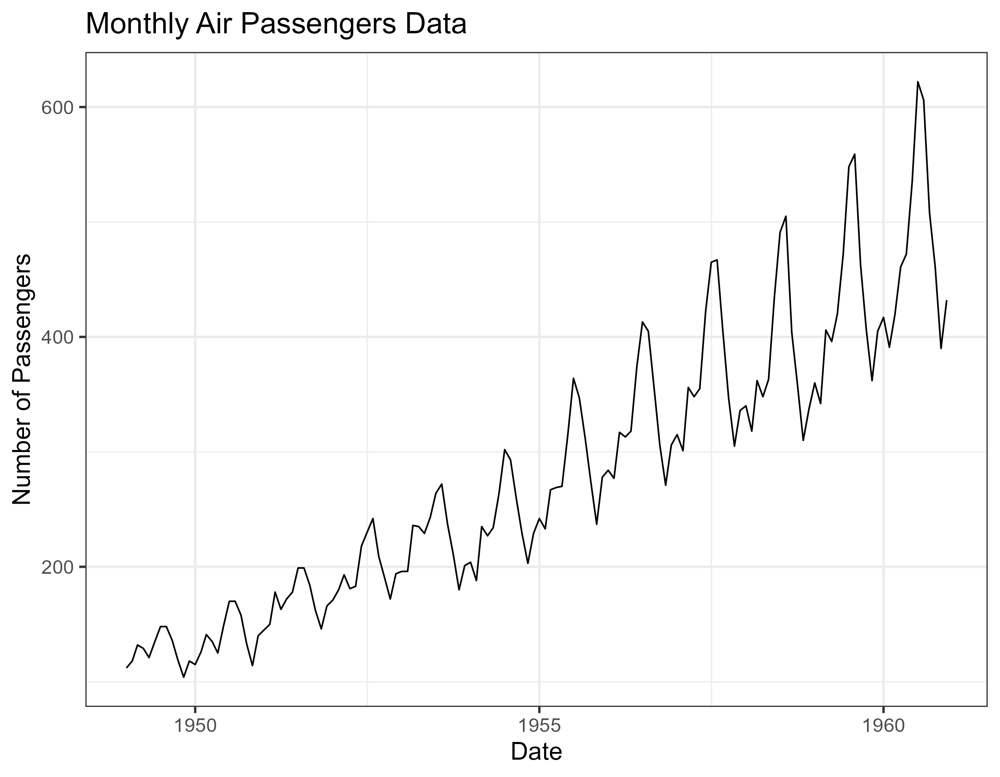
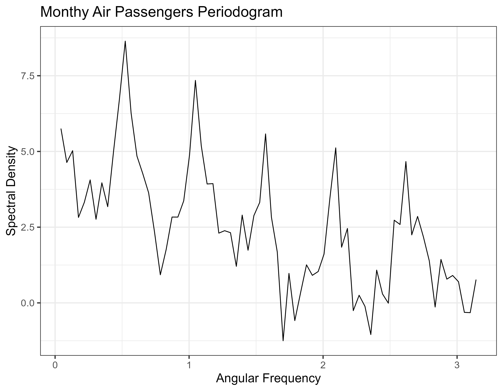
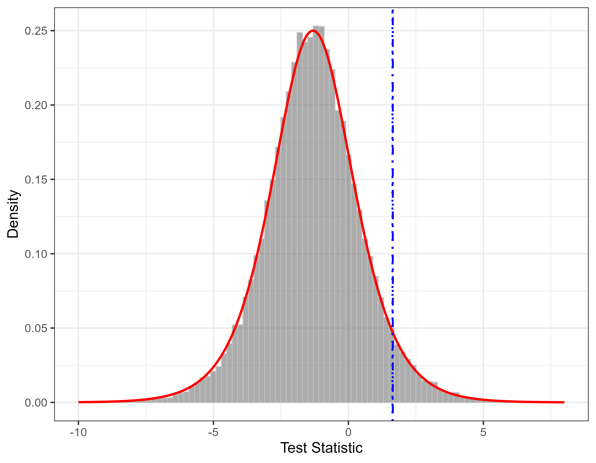
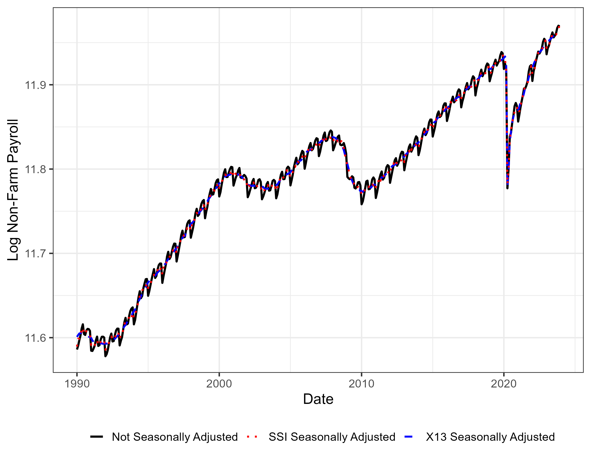
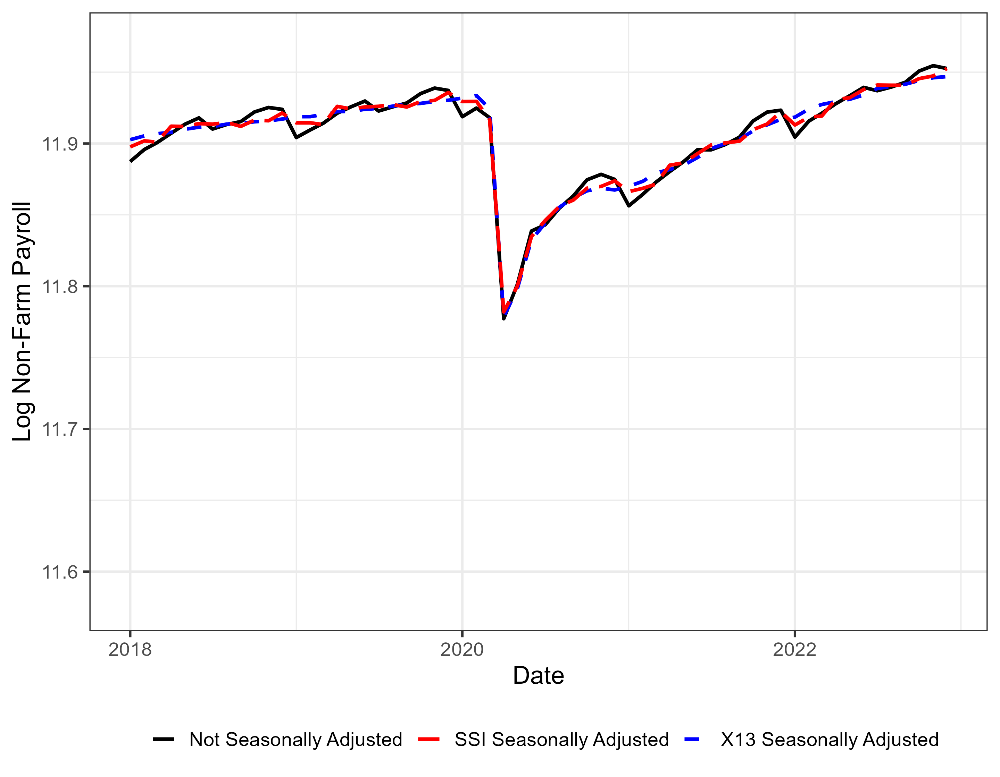
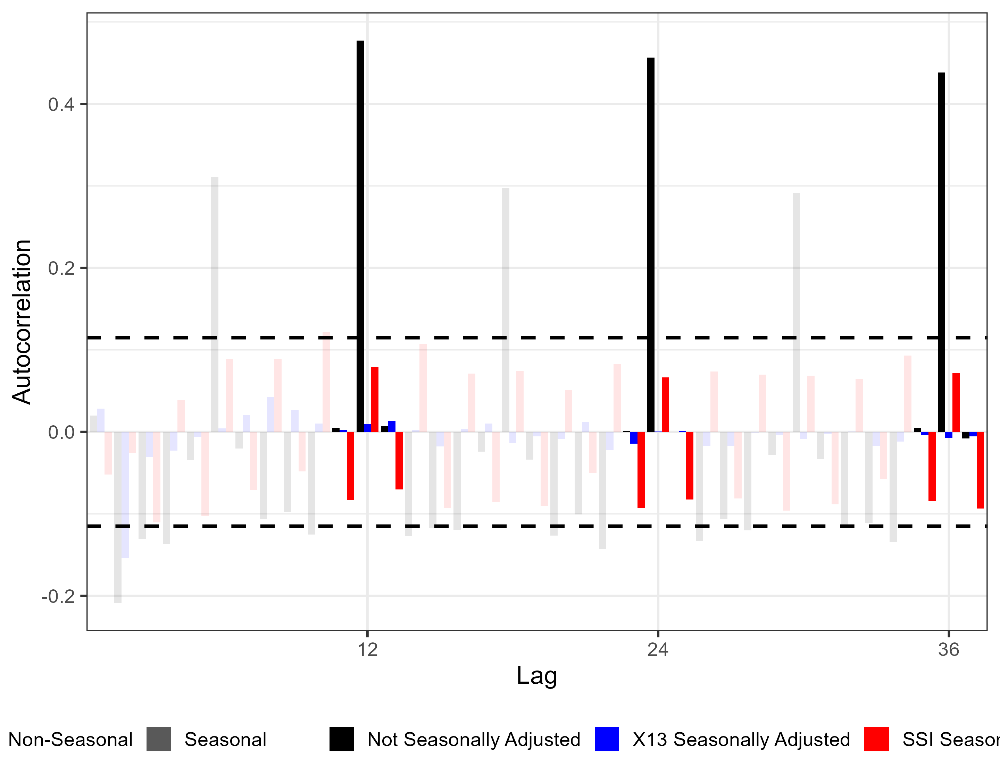
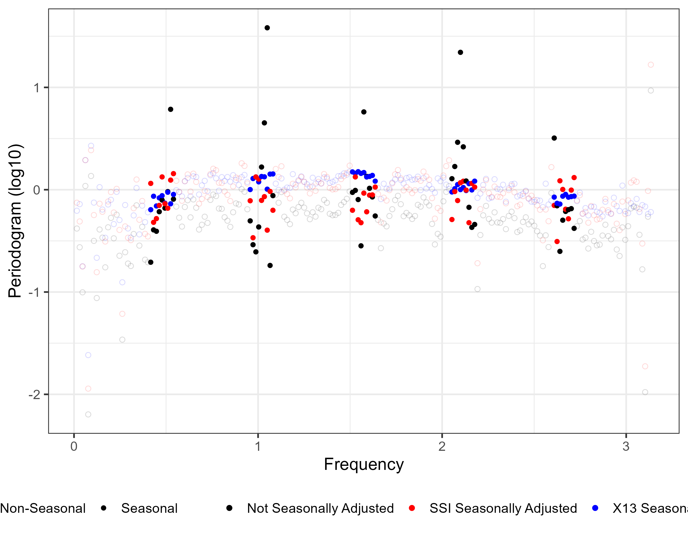
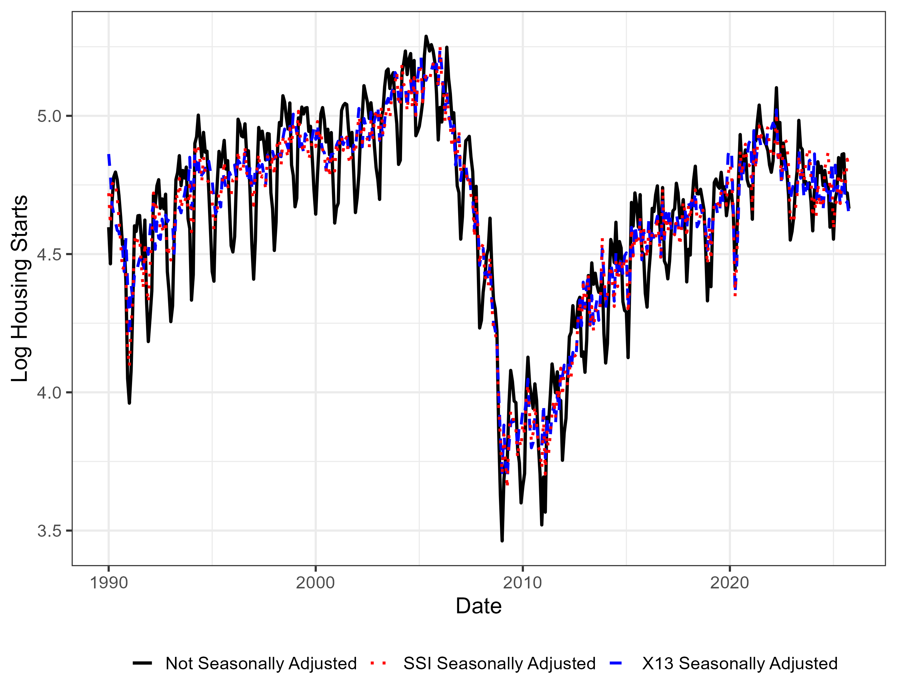
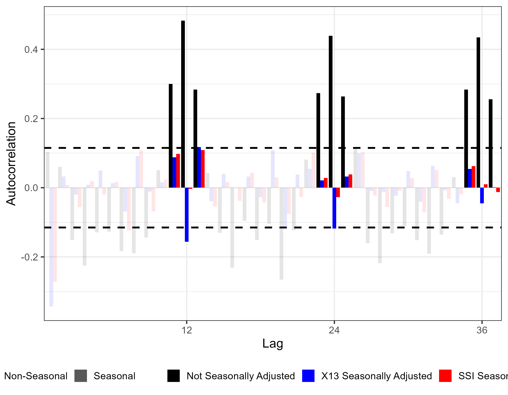
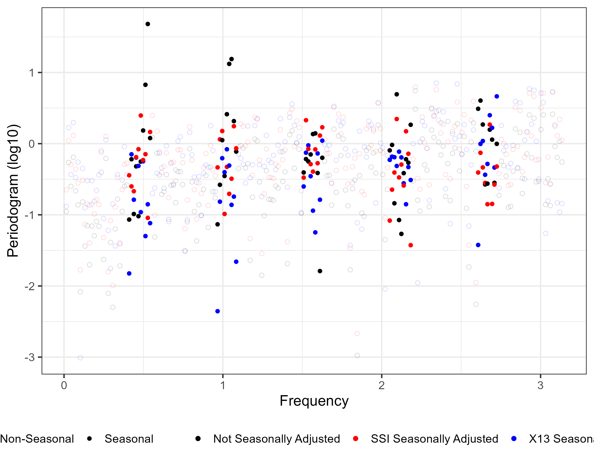

A Century of Definitions and a Way Forward
U.S. Bureau of Economic Analysis
The views expressed in this presentation are those of the authors and do not necessarily reflect the views of the Bureau of Economic Analysis or the U.S. Department of Commerce.
2026-08-01
Residual seasonality recurs across agencies because the object is not agreed upon, not because any one producer is failing.
“Some of us looking for answers regarding seasonal analysis may feel as if we’re in a dark room looking for a black cat. That’s bad, but it’s not as bad as it could be. Pity the philosophers who are in a dark room looking for a black cat that isn’t there.” — Zellner et al. (1978, p. 451)
| Tradition | Core object | Representative work |
|---|---|---|
| Regularity & repetition calendar-anchored |
Seasonal means across a calendar partition | Falkner 1924; Kallek 1978; ESS Guidelines |
| Seasonal unit roots & stability ARIMA polynomial |
Roots of the AR polynomial at seasonal frequencies | Hylleberg et al. 1990; Canova–Hansen 1995 |
| Signal extraction unobserved components |
Latent component St under an identifying restriction | Hillmer–Tiao 1982; Bell & Hillmer 1984; X-13ARIMA-SEATS |
| Spectral frequency-domain |
Functional of the spectral density at seasonal frequencies | Nerlove 1964; Granger 1978 |
→ Each tradition is internally consistent — but none nests the others.
→ So analysts consult all of them, implicitly building the superset — a definition nobody wrote down.
Who bears the cost?
→ The superset exists but no one can point to it.
What we build. A closed-loop framework that makes explicit what is currently assembled informally through analyst-level judgment:
What we find.
→ We start by placing both the data and the definition in the frequency domain.
Any finite-length series \{x_t\}_{t=1}^T admits two equivalent representations connected by the discrete Fourier transform:
d_x(\omega_j) = \sum_{t=1}^T x_t\, e^{-i\omega_j t}, \qquad x_t = \frac{1}{T}\sum_{j=0}^{T-1} d_x(\omega_j)\, e^{i\omega_j t}
at Fourier frequencies \omega_j = 2\pi j/T.
Think of the time series as a relatively homogeneous object and the DFT as the centrifuge which separates it into its component parts.


→ The annual cycle shows up both ways: as roughly twelve peaks per twelve years in the time plot, and as a sharp spike at the annual frequency (plus harmonics) in the periodogram.
→ Same structure, different coordinate language. In the frequency domain, periodicity becomes a property of specific frequencies rather than of calendar months — which is why we build the definition there.
One caveat. The periodogram is an inconsistent estimator of the spectral density. We don’t try to fix this; we exploit it.
Non-technical. Among all of a series’ possible repeating cycles, the ones associated with chosen cycles of interest are demonstrably larger than the others.
Technical. Relative to a set of chosen cycle lengths, the highest peak in the spectral density occurs near one of those cycles rather than at any other.
We derive a test statistic with a clean asymptotic null — the distance between the periodogram’s max height in seasonal vs. non-seasonal bins.
\begin{aligned} \textcolor{#9EA2A2}{\widehat{\Delta}}(z;\textcolor{#004C97}{\mathcal{P}},N,M) \;:=\;& \max_{m \in \textcolor{#007D8A}{\mathcal{M}_1}(\textcolor{#004C97}{\mathcal{P}},N;M)} b_m(\textcolor{#D86018}{I_T}) \\[2pt] \;-\;& \max_{m \in \mathcal{M}_0(\textcolor{#004C97}{\mathcal{P}},N;M)} b_m(\textcolor{#D86018}{I_T}) \end{aligned}
Under H_0:
\textcolor{#9EA2A2}{\widehat{\Delta}} \overset{d}{\rightarrow} \mathrm{Logistic}\bigl(\tau \log(N_1/N_0),\,\tau\bigr)
via EVT on periodogram ordinates.
Fix an ex ante set of fundamental periods \mathcal{P} \subseteq \{1,\dots,P_{\max}\}. Non-annual fundamentals (e.g. quadrennial cycles) are handled identically; for now assume \mathcal{P}=\{1\}.
Harmonics. For p \in \mathcal{P} and N observations per year,
\Omega_p(N) = \Bigl\{\tfrac{2\pi k}{pN} : k = 1,\dots,\lfloor pN/2 \rfloor\Bigr\}, \qquad \Omega_G(\mathcal{P},N) = \bigcup_{p \in \mathcal{P}} \Omega_p(N).
Monthly (N=12,\ \mathcal{P}=\{1\}): \Omega_G = \{\pi/6,\ \pi/3,\ \pi/2,\ 2\pi/3,\ 5\pi/6,\ \pi\}.
Partition. Divide (0,\pi] into M equal-width bins B_m and label:
\mathcal{M}_1 = \{m : \mathrm{int}(B_m) \cap \Omega_G \ne \emptyset\}, \qquad \mathcal{M}_0 = \{1,\dots,M\} \setminus \mathcal{M}_1.
Comparing the elevations of two mountain ranges, relative to a common sea level.
Bin maximum. b_m(f_Z) \;:=\; \sup_{\omega \in B_m} f_Z(\omega).
Population separation:
\Delta(f_Z;\mathcal{P},N,M) \;=\; \underbrace{\max_{m\in\mathcal{M}_1} b_m(f_Z)}_{\text{largest seasonal-bin peak}} \;-\; \underbrace{\max_{m\in\mathcal{M}_0} b_m(f_Z)}_{\text{largest non-seasonal peak}}.
Definition. \{Z_t\} is seasonal relative to (\mathcal{P},N,M) iff \Delta(f_Z;\mathcal{P},N,M) > 0.
Relative, not absolute: captures narrow peaks and diffuse seasonal energy that remains concentrated within the seasonal bins. \Delta is indexed by the design resolution M.
For a finite sample \{z_t\}_{t=1}^T, we estimate f_Z with the periodogram:
I_T(\omega_j) \;=\; \frac{1}{T}\left|\sum_{t=1}^T \tilde{z}_t\, e^{-i\omega_j t}\right|^2, \qquad \omega_j = \tfrac{2\pi j}{T},\ \ j = 1,\dots,\lfloor (T-1)/2 \rfloor.
Within-bin maximum. Let \mathcal{J}_m = \{j : \omega_j \in B_m\}. Then b_m(I_T) := \max_{j \in \mathcal{J}_m} I_T(\omega_j).
Sample statistic:
\widehat{\Delta}(z;\mathcal{P},N,M) \;=\; \underbrace{\max_{m \in \mathcal{M}_1} b_m(I_T)}_{\text{largest seasonal-bin ordinate}} \;-\; \underbrace{\max_{m \in \mathcal{M}_0} b_m(I_T)}_{\text{largest non-seasonal ordinate}}.
Next: under H_0 the ordinates are \approx i.i.d. exponential; we don’t correct this, we exploit it.
Under H_0: Z_t \sim \mathrm{WN}(0,\sigma^2). Then at Fourier frequencies,
\frac{I_T(\omega_j)}{\tau} \;\Rightarrow\; \mathrm{Exp}(1), \qquad \tau = \sigma^2,
independently across distinct \omega_j (Politis & McElroy, 2019).
With N_g = |\mathcal{J}_g|, classical EVT gives the chain
\mathrm{Exp}(1)^{\otimes N_g} \;\xrightarrow{\ \max\ }\; \mathrm{Gumbel}(\tau\log N_g,\, \tau) \;\xrightarrow{\ \text{diff.}\ }\; \mathrm{Logistic}\bigl(\tau\log(N_1/N_0),\, \tau\bigr),
with independence across disjoint \mathcal{J}_1, \mathcal{J}_0, so
\boxed{\ \widehat{\Delta}(z;\mathcal{P},N,M) \,\big|\, H_0 \;\Rightarrow\; \mathrm{Logistic}\!\left(\tau\log\tfrac{N_1}{N_0},\,\tau\right)\ }
1. Pre-whitenfit nonseasonal ARIMA by BIC; take residuals \hat{e}_t
Why pre-whiten? Colored-noise power sits in non-seasonal bins (low-frequency under AR(1)+, high-frequency under AR(1)-), inflating \max_{\mathcal{M}_0} b_m and shrinking \widehat{\Delta}. Raw \widehat{\Delta} rejects 0.3% of the time on AR(1), \phi=0.8; BIC pre-whitening restores size to 0.043–0.051. size table → In the software implementation this step has matured into M0-Whittle whitening — a de-biased Whittle AR fit that excludes seasonal-neighborhood ordinates (“Stage 0”) — same role, sharper tool.
↓
2. Standardize(\hat{e}_t - \bar{e})/s_e enforces \tau = 1
Why standardize? With \tau=1 the null collapses to \mathrm{Logistic}\bigl(\log(N_1/N_0),\, 1\bigr): a single known distribution whose only data-dependent input is the partition.
↓
3. Apply testcompute \widehat{\Delta}; reject if > c_{1-\alpha}
How sensitive to M? Empirical size holds in [0.046, 0.054] across M \in \{11, 19, 23, 31\} under white noise. M-sensitivity →
Size. Empirical null matches \mathrm{Logistic}(\tau\log(N_1/N_0),\tau) almost exactly.

Monthly, T=200, 50,000 replications. Vertical line: nominal 5% value.
Power. Competitive overall; dominates in quarterly and in the stationary-stochastic regime where BHs and CH fail.
| \widehat{\Delta} | BHs | CH | QS | VS | |
|---|---|---|---|---|---|
| Monthly, stoch. seas. (ρ = 1), σ²η = 0 | |||||
| σκ = 0.02 | 0.72 | 0.40 | 0.26 | 0.88 | 0.75 |
| σκ = 0.03 | 0.95 | 0.75 | 0.53 | 0.99 | 0.96 |
| Monthly, stoch. stat. (ρ = 0.95), σ²η = 0.5 | |||||
| σκ = 0.03 | 0.65 | 0.06 | 0.05 | 0.83 | 0.43 |
| Quarterly, stoch. seas., σ²η = 0.5 | |||||
| σκ = 0.03 | 0.61 | 0.38 | 0.36 | 0.54 | 0.54 |
T=200; N=12/4, M=23/7, P=1. Full tables in appendix.
No bandwidth, no kernel, no simulated critical values — just the Logistic distribution.
What the test measures. Excess seasonal-bin spectral power: \widehat{\Delta}(z;\mathcal{P},N,M) > 0.
The gap most procedures leave open. Adjustment filters (X-13, SEATS, STL) target different population objects than any specific seasonality test. The filter does its job; the test does its job — but the two don’t speak the same language.
What our adjustment should do. Remove exactly the excess the test detects: leave the adjusted series x^*_t with
\widehat{\Delta}(x^*;\mathcal{P},N,M) \;\approx\; 0
by construction, while preserving the non-seasonal spectral floor.
The logical conjugate. Test and adjustment share a partition and target the same object. \widehat{\Delta}(x^*) \approx 0 holds by construction; independent diagnostics (ACF inside bands, no spectral dip, variance ratio near 1) provide the empirical check.
Operationalization: Stochastic Spectral Imputation (SSI).
Every seasonal-bin ordinate is reset to a drawn donor level from the non-seasonal floor — the paper’s SSI, as implemented in freqseas, on BLS nonfarm payrolls.
Adjustment quality is multidimensional. X-13 is known to over-smooth and create spectral dips at seasonal frequencies. We weight four criteria by what they actually reveal:
Representative case
BSM, monthly, \rho = 0.95, \sigma_\kappa = 0.03.
| SSI | X-13 | |
|---|---|---|
| Variance ratio | 0.98 | 0.76 |
| Spectral dip | 0.21 | 0.38 |
| Corr(ê, ε) | 0.90 | 0.82 |
| MAE | 1.11 | 1.03 |
Bold: closer to target. → DGP
On α: larger \alpha ⇒ smaller c_{1-\alpha} ⇒ more series classified as seasonal; standard choice 0.05 — pre-specify before observing data, or \alpha becomes a tuning knob.
On M: design resolution of the bin partition; defaults M = 2N-1 (monthly → 23, quarterly → 7); empirical size is insensitive to M across reasonable choices.
Status. The detect test and SSI are the paper. Stage B and the identification layer are active development: the line-vs-band specification test and the phase rule (not testable at second order — a declared identification) are experimental.


→ SSI and X-13 produce nearly identical level series — consumers of the adjusted data would not detect the change at scale.
→ The COVID shock — historically large month-over-month swings — handled mechanically, with no judgmental adjustments: reproducibility and auditability at production scale.


→ ACF: both SSI and X-13 bring seasonal autocorrelations to insignificance. SSI introduces a mild alternating pattern (trigonometric imprint); neither value is significant.
→ Periodogram: over-smoothing by X-13 is visible directly — dispersion in seasonal bins is much tighter than in non-seasonal bins. SSI matches the floor across the board.


→ SSI tracks the published X-13 series closely and stays slightly more volatile — by design: less over-smoothing.
→ X-13 overcorrects at lag 12 — strongly positive in the raw series, strongly negative after X-13. SSI brings lags 12, 24, 36 inside the bands.
No disruption to published magnitudes; transition risk appears low.
Volatility closer to the underlying irregular, variance ratio nearer 1.
No dip at seasonal frequencies; ACF inside bands without over-correction.
No judgmental adjustments during the COVID shock: suitable for production workflows and scale.
Test rejects on both raw series; fails to reject on either SSI-adjusted series. ACF and periodogram diagnostics corroborate.
library(freqseas)
tst <- seas_test(AirPassengers) # detect + specify
adj <- seas_adjust(AirPassengers) # ...→ identify → operatefreqseas seasonality test
decision: seasonal (detection p = 2.86e-08, alpha = 0.05)
spec: line (shoulder p = 0.219, phase R = 1.00)
M = 19 (suggest_M, offset-free) | whitener: d = 0, AR(1) on M0 ordinates
SSI seasonal adjustment (line)
phase rule: minimum [declared identification]
imputation: bootstrap, B = 1, targets = harmonics (6), seed = none
post-adjustment detection p = 0.182Actual package output (v0.0.0.9000), lightly abridged for the slide. The adjustment is stochastic by default — pass seed to pin the draw.
Solid — the paper
ts / tsibble methods; keyed series mapped independentlyExperimental — in motion
minimum vs zero)→ Package under active development — collaboration welcome.
A definition that can be tested. Seasonality as relative peak dominance in the frequency domain: a single population object, explicit about its primitives, stated in both plain and technical language.
A closed loop: definition → test → adjustment. \widehat{\Delta} with a Logistic null (no bandwidth, no kernel, no simulation) plus SSI, the adjustment operator aligned with the test’s population object. Coherence-by-construction — achievable, but not automatic.
Why it matters. Statistical offices publish millions of series under real resource constraints — BEA alone ≈ 4M across NIPA and the satellite accounts. Robustness, transparency, minimal parametric commitment, and scalability are design requirements, not luxuries — and a test and adjustment that answer the same question against the same object make the work easier to communicate: within agencies, between them, and with the public.
An invitation. A proof of concept that epistemic closure in seasonal adjustment is achievable. We invite researchers working in the time domain, state space, or elsewhere to build equivalent closed loops in their preferred formalism — so the field can communicate about definitions, not just procedures.
The Seasons They Are A-Changin’: A Century of Definitions and a Way Forward
Working paper · U.S. Bureau of Economic Analysis
The views expressed in this presentation are those of the authors and do not necessarily reflect the views of the Bureau of Economic Analysis or the U.S. Department of Commerce.
Reached via links from the main deck — press Esc / O for the slide overview to return.
1. Periodogram ordinates under H_0. For Z_t \sim \mathrm{WN}(0,\sigma^2), let \tau := \sigma^2. At Fourier frequencies \omega_j = 2\pi j/T, j \ge 1, I_T(\omega_j)/\tau \;\xrightarrow{d}\; \mathrm{Exp}(1), with asymptotic independence across distinct \omega_j (Politis & McElroy, 2019).
2. EVT for i.i.d. exponentials. For Y_1,\dots,Y_N \overset{\mathrm{iid}}{\sim} \mathrm{Exp}(1), \Pr\bigl(\textstyle\max_i Y_i - \log N \le x\bigr) \to e^{-e^{-x}}. Scaling by \tau: for M_g := \max_{j \in \mathcal{J}_g} I_T(\omega_j), \frac{M_g - \tau\log N_g}{\tau} \;\Rightarrow\; \mathrm{Gumbel}(0,1), so M_g \approx \mathrm{Gumbel}(\tau \log N_g,\, \tau).
3. Independence of M_0, M_1. By construction \mathcal{J}_1 \cap \mathcal{J}_0 = \emptyset, so M_0 and M_1 are functions of disjoint ordinates and asymptotically independent.
4. Gumbel difference is Logistic. For independent G_g \sim \mathrm{Gumbel}(\mu_g, \tau), the substitution u = e^{-(g_0-\mu_0)/\tau} (so f_{G_0}(g_0)\,dg_0 = e^{-u}\,du) reduces \Pr(G_1 - G_0 \le x) \;=\; \int_0^\infty e^{-u(1+a)}\,du \;=\; \frac{1}{1+a}, where a := e^{-(x - (\mu_1 - \mu_0))/\tau}. Hence G_1 - G_0 \,\sim\, \mathrm{Logistic}(\mu_1 - \mu_0,\, \tau).
5. Collect. Substituting \mu_g = \tau \log N_g gives \mu_1 - \mu_0 = \tau\log(N_1/N_0): \boxed{\widehat{\Delta} \,\big|\, H_0 \;\Rightarrow\; \mathrm{Logistic}\!\left(\tau\log\tfrac{N_1}{N_0},\,\tau\right)}
Beyond Gaussian WN. Davis & Mikosch (1999): the Gumbel limit for the periodogram maximum holds under non-Gaussian, finite-variance innovations; ordinates exhibit “almost i.i.d.” behavior and the exceedance point process converges to a Poisson limit. The Logistic null extends accordingly.
Practical form. Plug-in \widehat{\tau} = s^2; critical values come directly from the Logistic CDF, no simulation required.
T = 200, N = 12, M = 23, \mathcal{P} = \{1\}; 10,000 reps per cell. Nominal \alpha = 0.05.
| DGP | Raw | True | AIC | BIC | Δ |
|---|---|---|---|---|---|
| AR(1), φ = 0.3 | 0.052 | 0.045 | 0.037 | 0.043 | 0.100 |
| AR(1), φ = 0.5 | 0.051 | 0.047 | 0.036 | 0.045 | 0.083 |
| AR(1), φ = 0.8 | 0.003 | 0.049 | 0.040 | 0.049 | 0.063 |
| AR(1), φ = 0.95 | 0.000 | 0.051 | 0.042 | 0.051 | 0.055 |
| MA(1), θ = 0.3 | 0.058 | 0.048 | 0.039 | 0.048 | 0.093 |
| MA(1), θ = 0.7 | 0.066 | 0.045 | 0.038 | 0.043 | 0.088 |
| ARMA(1,1) | 0.056 | 0.042 | 0.036 | 0.043 | 0.071 |
| AR(2), spectral peak | 0.003 | 0.049 | 0.040 | 0.048 | 0.006 |
Takeaways. BIC pre-whitening (bold) is well-calibrated across DGPs (0.043–0.051). Raw \widehat{\Delta} is severely conservative under persistent AR(1). First-differencing a stationary series over-rejects. AIC is systematically mildly conservative.
Gaussian white-noise null; N = 12, \mathcal{P} = \{1\}; 10,000 reps per cell. Nominal \alpha = 0.05.
| T | M | Ordinates / bin | Rejection rate |
|---|---|---|---|
| 200 | 11 | 9.0 | 0.050 |
| 200 | 19 | 5.2 | 0.049 |
| 200 | 23 | 4.3 | 0.048 |
| 200 | 31 | 3.2 | 0.049 |
| 600 | 11 | 27.2 | 0.047 |
| 600 | 19 | 15.7 | 0.050 |
| 600 | 23 | 13.0 | 0.050 |
| 600 | 31 | 9.6 | 0.049 |
Takeaway. Empirical size lands in [0.047, 0.050] across all (T, M) combinations. Because \widehat{\Delta} is the difference of maxima over pooled N_1 and N_0 ordinates (not within-bin), the Gumbel approximation stays accurate even when individual bins hold \sim 3 ordinates.
M \in \{15, 27\} excluded: seasonal frequencies \pi/3 and 2\pi/3 fall on bin boundaries.
Input. Observed x_t (t = 1,\dots,T); partition (\mathcal{P}, N, M); options Band, PhaseMode, q_D.
Band = between_seasonal_extremes: restrict \mathcal{J}_S and \mathcal{J}_D^{\mathrm{cand}} to Fourier indices in [B_{m_{\min}}, B_{m_{\max}}] (frequency range spanned by \mathcal{M}_1); else \mathcal{J}_S = \mathcal{J}_S^{0}, \mathcal{J}_D^{\mathrm{cand}} = \mathcal{J}_D^{0}.PhaseMode — random: s \sim \mathrm{Uniform}(\{-1, +1\}); keep: s \leftarrow \mathrm{sgn}(\mathrm{Re}(d_x(\omega_j))); donor: s \leftarrow \mathrm{sgn}(\mathrm{Re}(d_x(\omega_k))). Set d^*(\omega_j) \leftarrow s \cdot |d^*(\omega_j)|.PhaseMode — random: \phi \sim \mathrm{Uniform}(-\pi, \pi); keep: \phi \leftarrow \arg(d_x(\omega_j)); donor: \phi \leftarrow \arg(d_x(\omega_k)). Set d^*(\omega_j) \leftarrow |d^*(\omega_j)|\, e^{i\phi}.Basic structural model (Busetti & Harvey, 2003) with AR(1) amplitude dynamics.
Equations. \begin{aligned} z_t &= \mu_t + S_t'\gamma_t + \epsilon_t, & \epsilon_t &\sim \mathrm{NID}(0,\sigma^2_\epsilon) \\ \mu_t &= \mu_{t-1} + \beta_{t-1} + \eta_t, & \eta_t &\sim \mathrm{NID}(0,\sigma^2_\eta) \\ \beta_t &= \beta_{t-1} + \zeta_t, & \zeta_t &\sim \mathrm{NID}(0,\sigma^2_\zeta) \\ \gamma_t &= \alpha + \rho\,\gamma_{t-1} + \kappa_t, & \kappa_t &\sim \mathrm{NID}(0,\sigma^2_\kappa) \end{aligned}
Components.
Three scenarios.
| Scenario | ρ | α | Panel |
|---|---|---|---|
| Random-walk amplitudes | 1 | 0 | A |
| Stochastic stationary | 0.95 | 0.01 | B |
| Deterministic | 0 | varied | C |
Fixed across all. T = 200; N = 12 (monthly) or 4 (quarterly); \sigma^2_\epsilon = 1; \sigma^2_\zeta = 0; \sigma^2_\eta \in \{0,\, 0.5\}; 5% nominal size; 5,000 replications per cell.
Swept parameter.
Why these three? Busetti–Harvey fix \rho = 1: amplitudes evolve as a random walk and the seasonal component’s variance can eventually dominate z_t. Allowing \rho to vary gives a stationary-but-persistent case (\rho = 0.95) and a memoryless deterministic case (\rho = 0). Together the three cover the stochastic-to-deterministic spectrum of seasonal signals while preserving comparability to the canonical BSM literature.
Monthly, T = 200, 5,000 replications per cell. Bold: closer to target.
| MAE ↓ | Corr ↑ | Spec MAE ↓ | Dip ↓ | VR ≈ 1 | ||||||
|---|---|---|---|---|---|---|---|---|---|---|
| σκ | SSI | X13 | SSI | X13 | SSI | X13 | SSI | X13 | SSI | X13 |
| 0.01 | 1.10 | 1.02 | 0.93 | 0.83 | 0.31 | 0.50 | 0.22 | 0.38 | 0.94 | 0.74 |
| 0.02 | 1.10 | 1.02 | 0.90 | 0.82 | 0.37 | 0.52 | 0.21 | 0.39 | 0.97 | 0.74 |
| 0.03 | 1.11 | 1.02 | 0.86 | 0.81 | 0.43 | 0.54 | 0.21 | 0.39 | 1.02 | 0.76 |
| 0.04 | 1.13 | 1.03 | 0.82 | 0.79 | 0.49 | 0.57 | 0.23 | 0.40 | 1.09 | 0.77 |
| 0.05 | 1.15 | 1.03 | 0.79 | 0.77 | 0.55 | 0.59 | 0.23 | 0.38 | 1.17 | 0.80 |
Takeaway. X-13 wins MAE by over-smoothing. SSI wins every structural metric. VR gap widens with signal strength: SSI scales from 0.94 to 1.17 (tracking the underlying variance); X-13 stays flat at 0.74–0.80.
Monthly, T = 200, 5,000 replications per cell. Bold: closer to target.
| MAE ↓ | Corr ↑ | Spec MAE ↓ | Dip ↓ | VR ≈ 1 | ||||||
|---|---|---|---|---|---|---|---|---|---|---|
| σκ | SSI | X13 | SSI | X13 | SSI | X13 | SSI | X13 | SSI | X13 |
| 0.01 | 1.10 | 1.02 | 0.91 | 0.83 | 0.34 | 0.50 | 0.21 | 0.38 | 0.95 | 0.74 |
| 0.02 | 1.11 | 1.02 | 0.90 | 0.83 | 0.35 | 0.51 | 0.21 | 0.38 | 0.96 | 0.75 |
| 0.03 | 1.11 | 1.03 | 0.90 | 0.82 | 0.38 | 0.53 | 0.21 | 0.38 | 0.98 | 0.76 |
| 0.04 | 1.11 | 1.03 | 0.88 | 0.81 | 0.41 | 0.54 | 0.21 | 0.37 | 1.00 | 0.78 |
| 0.05 | 1.12 | 1.04 | 0.87 | 0.80 | 0.45 | 0.57 | 0.21 | 0.37 | 1.03 | 0.80 |
Takeaway. Same qualitative pattern as Panel A, at smaller magnitudes. SSI’s VR lands near 1.00 throughout and Dip is essentially constant at 0.21 — the surgical nature of SSI shows most clearly here, because the seasonal signal is weaker.
Monthly, T = 200, 5,000 replications per cell. Bold: closer to target.
| MAE ↓ | Corr ↑ | Spec MAE ↓ | Dip ↓ | VR ≈ 1 | ||||||
|---|---|---|---|---|---|---|---|---|---|---|
| γ0 | SSI | X13 | SSI | X13 | SSI | X13 | SSI | X13 | SSI | X13 |
| 0.10 | 1.10 | 1.02 | 0.94 | 0.84 | 0.30 | 0.49 | 0.21 | 0.38 | 0.94 | 0.74 |
| 0.20 | 1.10 | 1.02 | 0.91 | 0.84 | 0.33 | 0.50 | 0.21 | 0.39 | 0.95 | 0.74 |
| 0.30 | 1.11 | 1.02 | 0.89 | 0.84 | 0.37 | 0.50 | 0.21 | 0.39 | 0.97 | 0.74 |
| 0.40 | 1.11 | 1.02 | 0.86 | 0.84 | 0.41 | 0.49 | 0.22 | 0.38 | 1.00 | 0.74 |
| 0.50 | 1.12 | 1.02 | 0.84 | 0.84 | 0.45 | 0.49 | 0.21 | 0.38 | 1.04 | 0.74 |
Takeaway. X-13’s VR sits flat at 0.74 regardless of signal strength — over-smoothing is independent of what it is smoothing. SSI’s VR scales from 0.94 to 1.04, tracking the underlying variance structure. Correlation ties at \gamma_0 = 0.50 because both methods converge on a stable deterministic pattern.

→ SSI ordinates in seasonal bins sit at the non-seasonal floor. X-13’s ordinates dip below the floor — the canonical spectral trough of filter-based methods.
Genuine freqseas output: all variants and donor draws precomputed in R (R/make_w4_data.R); the head window (first 12 observations) is unadjusted by construction; displayed level totals are forced to the NSA yearly sums at every frame (pro-rata, freqseas::benchmark_totals).
CPI-U apparel, U.S. city average, NSA (CUUR0000SAA) against the published X-13 series (CUSR0000SAA), Jan 1947 – Dec 2024 (78 whole calendar years). Same widget, same exporter (R/make_w4_data.R apparel), same classic-SSI path: \widehat{\Delta} = 181.1 before, 150 seasonal-bin ordinates replaced, 25 per harmonic. Pre-1941 apparel is collected quarterly and the SA companion starts in 1947, so the widget begins there.
// Unique-id generator in its OWN cell, so the widget factories never reference
// their own name (self-reference is a circular definition in OJS). Copied from
// ar1_spike.qmd.
nextUid = (function () { let n = 0; return () => ++n; })()
// ---------------------------------------------------------------------------
// Widget factories (design doc §5) — one reusable factory per widget, each in
// its own OJS cell, instantiated per-slide with an options object.
// W4 makeSurgery — BUILT below; binding spec = w4_spec.md.
// W3 makeNullDist — BUILT below (slide "The null distribution"): seeded JS
// Exp(1) draws on the payrolls grid, maxima flash, Δ̂ fills a histogram
// over the exact Logistic null (freqseas evt.R: standardized ordinates,
// tau_hat = 1, location log(N1/N0), scale 1 — NOT log-ordinates).
// W2 makePartition — BUILT below; ONE factory, THREE mounts across the slides
// "the partition" / "Delta" / "the sample analog", progressively revealing
// the population object: opts.mode = "bins" (support and colouring only),
// "sdf" (synthetic closed-form density + population Delta), "sample" (one
// seeded f*Exp(1) draw + Delta-hat). No data dependency at all — these
// three slides are population-level pedagogy and deliberately predate the
// payrolls series. M is shared across the mounts via the partitionM cell.
// Bin rule mirrors freqseas partition.R (right-closed equal-width bins,
// Nyquist harmonic included per seas_test).
// [WAS makeBins, on the payrolls whitened periodogram, until 2026-08-17.]
// [RETIRED 2026-08-14] makeFourier (W1) — replaced by the manim time→frequency
// clip figures/time_to_frequency.mp4 (source: Dropbox Misc/frequency_animation).
// Shared rules: hand-drawn SVG, deterministic seeded RNG, rAF loop gated on
// section.present with a max-seconds cap; animations only run over HTTP.
// ---------------------------------------------------------------------------// W4 data: built by R/make_w4_data.R (contract "coeffs_windowed"). Loaded once,
// shared by both makeSurgery mounts (slide 18 + appendix A10).
// ?v= pins the browser-cache identity to the data schema: bump it whenever
// make_w4_data.R regenerates the file (plain HTTP servers send no Cache-Control,
// and Chrome's heuristic cache will otherwise happily serve a stale copy).
w4data = FileAttachment("data/w4_surgery.json?v=2").json()// W4 appendix twin: the same exporter run on CPI-U apparel prices
// (Rscript R/make_w4_data.R apparel). Same schema, same contract; only the
// series, the target count (150 vs 165) and meta.units differ. Loaded as its
// own cell so the payrolls mounts never wait on it.
w4apparel = FileAttachment("data/w4_apparel.json?v=1").json()// ============================ makeSurgery (W4) ==============================
// Reusable SSI-surgery widget factory per w4_spec.md §4 (ar1_spike pattern:
// per-instance state, hand-drawn SVG, rAF loop gated on section.present).
// opts: { explore: bool, data: <w4 json> } — explore adds quantile/method/
// reseed/view/reset; data defaults to the payrolls export (w4data) and can be
// any file built by R/make_w4_data.R (the apparel twin is the second one).
// Display units come from the data itself (meta.units), so nothing about the
// series is hard-coded here.
// All statistics precomputed in R; JS only replays and reconstructs.
// Index conventions (meta.index_convention / meta.coef_convention, R is
// 1-based): JS 0-based i into dlog arrays maps to R t = i+1, so
// delta_k(i) = Re[(c_re + i·c_im)·e^{i·omega_k·(i+1−t0)}] for i ≥ t0−1,
// omega_k = 2π·j_k/n_e; levels: loglvl[0] = log_nsa[0], loglvl[m+1] =
// loglvl[m] + dl[m]; the final state SNAPS to the variant's final_dlog_check.
// LEVEL DISPLAYS ARE BENCHMARKED (schema v2, spec §1.5 pro-rata branch): every
// frame forces yearly totals to the NSA sums via meta.benchmark.rule —
// factor_y = year_sums_nsa[y] / Σ level over year y's 12-obs block (JS 0-based
// block y*12..y*12+11) — deterministic accounting arithmetic, the sanctioned
// exception to "no statistics in JS". The snapped state displays the exported
// final_level_bench exactly; the chip shows evt_after_bench.
makeSurgery = function (opts) {
opts = opts || {};
const uid = nextUid();
const explore = !!opts.explore;
// ---- data unpack -------------------------------------------------------
const DATA = opts.data || w4data;
const META = DATA.meta, SH = DATA.shared, VS = DATA.variants;
// meta.units is schema v2.1; the fallback is the payrolls convention so an
// older JSON still renders correctly.
const U = META.units || {scale: 1000, suffix: "M", digits: 0,
level_label: "reconstructed levels, millions"};
const T = META.n_dlog, t0 = META.t0, NE = META.n_e, NS = META.n_spec;
const ALPHA = SH.evt_before.alpha;
const TG = SH.targets, NT = TG.length;
const OMG = TG.map(t => 2 * Math.PI * t.j / NE); // exact phases from j
const dlog0 = Float64Array.from(SH.dlog_nsa);
const pgB = SH.pgram_before;
const lvlNSA = SH.level_nsa, lvlSA = SH.level_x13, dates = SH.dates;
const logNSA0 = SH.log_nsa[0];
const dlogSA = new Float64Array(T);
for (let i = 0; i < T; i++) dlogSA[i] = Math.log(lvlSA[i + 1]) - Math.log(lvlSA[i]);
const bandV = VS.find(v => v.is_band_default);
const defV = VS.find(v => v.is_default);
const bandAfter = pgB.map((p, jj) => p / (bandV.gain_pos[jj] * bandV.gain_pos[jj]));
const NY = SH.benchmark.n_years, YS = SH.benchmark.year_sums_nsa; // 87 × 12 = n_obs
// play order: slow beats = first ordinate of harmonics 1–3, then the rest
// straight through in exported animation order (additive deltas, so any
// order reconstructs exactly).
const firstOfH = [];
TG.forEach((t, i) => { if (firstOfH[t.harmonic - 1] === undefined) firstOfH[t.harmonic - 1] = i; });
const slowIdx = firstOfH.slice(0, 3);
const order = slowIdx.concat(TG.map((_, i) => i).filter(i => slowIdx.indexOf(i) < 0));
// harmonic bin extents (grid-index runs of the targets) for shading/labels
const hInfo = [];
TG.forEach((t, i) => {
const h = t.harmonic - 1;
if (!hInfo[h]) hInfo[h] = { label: t.harmonic_label, jmin: t.j, jmax: t.j };
hInfo[h].jmin = Math.min(hInfo[h].jmin, t.j);
hInfo[h].jmax = Math.max(hInfo[h].jmax, t.j);
});
// ---- reconstruction math ----------------------------------------------
const applyDelta = (dl, V, k, sign) => { // O(T): add ordinate k's delta
const cr = sign * V.c_re[k], ci = sign * V.c_im[k], w = OMG[k];
const cw = Math.cos(w), sw = Math.sin(w);
let er = 1, ei = 0; // e^{i·w·(i+1-t0)}, i = t0-1 first
for (let i = t0 - 1; i < T; i++) {
dl[i] += cr * er - ci * ei;
const nr = er * cw - ei * sw; ei = er * sw + ei * cw; er = nr;
}
};
const deltaSeries = (V, k) => { // the windowed sinusoid alone
const d = new Float64Array(T);
applyDelta(d, V, k, 1);
return d;
};
const levelsFrom = dl => { // cumulate: log-levels, len T+1
const L = new Float64Array(T + 1);
L[0] = logNSA0;
for (let i = 0; i < T; i++) L[i + 1] = L[i] + dl[i];
return L;
};
const benchLevels = L => { // meta.benchmark.rule (pro-rata
const out = new Float64Array(T + 1); // per 12-obs year block)
for (let m = 0; m <= T; m++) out[m] = Math.exp(L[m]);
for (let y = 0; y < NY; y++) {
let s = 0; const a = y * 12;
for (let m = a; m < a + 12; m++) s += out[m];
const f = YS[y] / s;
for (let m = a; m < a + 12; m++) out[m] *= f;
}
return out;
};
// JS self-check (spec §4 / exporter flag): (a) rebuild the default variant's
// final dlog from coefficients alone, tolerance max(2·coef_final_dev, 1e-6);
// (b) benchmark the snapped levels via the JS rule and compare to the
// exported final_level_bench, tolerance 1e-6 RELATIVE (exporter measured
// 4.87e-9 for this consumer-side mirror).
let checkFailed = false;
{
const test = Float64Array.from(dlog0);
for (let k = 0; k < NT; k++) applyDelta(test, defV, k, 1);
let dev = 0;
for (let i = 0; i < T; i++) dev = Math.max(dev, Math.abs(test[i] - defV.final_dlog_check[i]));
const tol = Math.max(2 * defV.coef_final_dev, META.validation.js_snap_tolerance);
if (!(dev <= tol)) {
checkFailed = true;
console.error(`makeSurgery[${uid}] self-check FAILED: coefficient reconstruction ` +
`dev ${dev.toExponential(3)} > tol ${tol.toExponential(3)}`);
}
const bl = benchLevels(levelsFrom(defV.final_dlog_check));
let rel = 0;
for (let m = 0; m <= T; m++)
rel = Math.max(rel, Math.abs(bl[m] - defV.final_level_bench[m]) /
Math.abs(defV.final_level_bench[m]));
if (!(rel <= 1e-6)) {
checkFailed = true;
console.error(`makeSurgery[${uid}] self-check FAILED: benchmark mirror rel dev ` +
`${rel.toExponential(3)} > 1e-6 vs final_level_bench`);
}
}
// ---- geometry ----------------------------------------------------------
// H was 772 when the minimap caption lived inside the plot (baseline nB + 26);
// that caption is HTML now, so the box ends 20 units under the minimap — still
// clear of the invisible .mhit drag target, which reaches nB + 8 = 744.
const W = 1700, H = 756, mL = 74, mR = 30;
const iw = W - mL - mR;
const pT = 16, pB = 296; // periodogram panel
const tT = 372, tB = 630; // time panel
const nT = 668, nB = 736; // minimap
const xJ = j => mL + (j / NS) * iw; // grid index -> x (omega scale)
// log10 power scale: domain covers before + every exported after (band incl.)
let pLo = Infinity, pHi = -Infinity;
const eat = v => { if (v > 0) { pLo = Math.min(pLo, v); pHi = Math.max(pHi, v); } };
pgB.forEach(eat); bandAfter.forEach(eat);
VS.forEach(v => { if (v.pgram_after) v.pgram_after.forEach(eat); });
const l10 = Math.log10, pLo10 = l10(pLo) - 0.25, pHi10 = l10(pHi) + 0.25;
const yP = v => pT + (pHi10 - l10(Math.max(v, 1e-300))) / (pHi10 - pLo10) * (pB - pT);
// default zoom: 6 years ending the December before the COVID cliff (the
// cliff stays visible in the full-range minimap; spec §4). The window is
// MOVABLE: dragging the minimap recenters it (fixed width, display-only).
// ponytail: fixed 6-year width, drag-to-move only — resize handles only if requested.
let cliff = 0;
for (let i = 1; i < T; i++) if (dlog0[i] < dlog0[cliff]) cliff = i;
const ZW = 71; // window span: 72 monthly obs
const zmDefault = Math.max(ZW + 1, cliff + 1 - 4) - ZW;
let zm0 = zmDefault, zm1 = zmDefault + ZW; // mutable level indices
const xT = m => mL + ((m - zm0) / ZW) * iw;
// y domains over the CURRENT zoom window (recomputed on drag so nothing
// clips): levels = NSA ∪ X-13 ∪ default benchmarked final; dlog likewise
let lvLo = 0, lvHi = 1, dLo = 0, dHi = 1;
const computeYDomains = () => {
lvLo = Infinity; lvHi = -Infinity;
for (let m = zm0; m <= zm1; m++) {
lvLo = Math.min(lvLo, lvlNSA[m], lvlSA[m], defV.final_level_bench[m]);
lvHi = Math.max(lvHi, lvlNSA[m], lvlSA[m], defV.final_level_bench[m]);
}
const padL = 0.07 * (lvHi - lvLo);
lvLo = (lvLo - padL) / U.scale; lvHi = (lvHi + padL) / U.scale;
dLo = Infinity; dHi = -Infinity;
for (let i = Math.max(0, zm0 - 1); i <= zm1 - 1; i++) {
dLo = Math.min(dLo, dlog0[i], dlogSA[i]);
dHi = Math.max(dHi, dlog0[i], dlogSA[i]);
}
const padD = 0.1 * (dHi - dLo); dLo -= padD; dHi += padD;
};
computeYDomains();
const yLv = v => tT + (lvHi - v) / (lvHi - lvLo) * (tB - tT);
const yDl = v => tT + (dHi - v) / (dHi - dLo) * (tB - tT);
// minimap scales (full range, levels; COVID cliff visible)
let nLo = Infinity, nHi = -Infinity;
for (let m = 0; m <= T; m++) { nLo = Math.min(nLo, lvlNSA[m]); nHi = Math.max(nHi, lvlNSA[m]); }
const xN = m => mL + (m / T) * iw;
const yN = v => nT + (nHi - v) / (nHi - nLo) * (nB - nT);
// ---- path builders -----------------------------------------------------
const P = (x, y) => x.toFixed(1) + " " + y.toFixed(1);
const zoomPathLevelsRaw = arr => { // arr = levels in source units
let d = "";
for (let m = zm0; m <= zm1; m++) d += (m === zm0 ? "M" : "L") + P(xT(m), yLv(arr[m] / U.scale));
return d;
};
const zoomPathDlog = dl => {
let d = "";
const i0 = Math.max(0, zm0 - 1); // month 0 has no dlog
for (let i = i0; i <= zm1 - 1; i++)
d += (i === i0 ? "M" : "L") + P(xT(i + 1), yDl(dl[i]));
return d;
};
const miniPathRaw = arr => {
let d = "";
for (let m = 0; m <= T; m += 2) d += (m === 0 ? "M" : "L") + P(xN(m), yN(arr[m]));
return d;
};
// published-series overlays, both domains — zoom-dependent, rebuilt by
// applyZoom() whenever the window moves (minimap NSA path is zoom-free)
let pNSAlv = "", pSAlv = "", pNSAdl = "", pSAdl = "";
const pathNSAmini = miniPathRaw(lvlNSA);
// ---- formatting helpers ------------------------------------------------
const statFmt = s => Math.abs(s) >= 10 ? s.toFixed(1) : s.toFixed(2);
// sup() now serves the SVG log-power decades ONLY: a <tspan dy> pair is the
// one place a superscript still has to be hand-drawn, because that label is
// an axis tick inside the plot.
const sup = (txt, fs) => `<tspan dy="-9" font-size="${fs || 14}">${txt}</tspan>`;
// KaTeX for the header/footer chrome. The page's math hook (bls_slides.html
// <head>) only fires on DOMContentLoaded, so OJS-built markup has to call
// katex itself. Guarded: a dead CDN should cost raw TeX, not the whole widget.
// ponytail: raw TeX beats a blank slide mid-presentation.
const kx = t => (typeof katex !== "undefined")
? katex.renderToString(t, { throwOnError: false })
: t;
// p-value as TeX, replacing pFmt: the readout it feeds is HTML now, and
// pFmt's <tspan dy="-9"> superscripts only mean anything inside an <svg>.
const pTeX = p => {
if (p <= 0) return "p < 10^{-15}";
if (p < 1e-3) {
const e = Math.floor(l10(p)), m = (p / Math.pow(10, e)).toFixed(1);
return `p = ${m} \\times 10^{${e}}`;
}
return `p = ${p.toFixed(3)}`;
};
// ---- static SVG skeleton ----------------------------------------------
const root = document.createElement("div");
root.style.cssText = "width:100%;";
// seasonal-bin shading + harmonic flash labels
let shadeS = "", hLabS = "";
hInfo.forEach((h, i) => {
const x0 = xJ(h.jmin - 0.5), x1 = Math.min(xJ(h.jmax + 0.5), mL + iw);
shadeS += `<rect x="${x0.toFixed(1)}" y="${pT}" width="${(x1 - x0).toFixed(1)}" height="${pB - pT}" fill="var(--bea-lblue)" opacity="0.5"/>`;
hLabS += `<text class="hlab" data-h="${i}" x="${((x0 + x1) / 2).toFixed(1)}" y="${pT + 26}" text-anchor="middle" font-size="24" font-weight="700" fill="var(--bea-blue)" opacity="0">${h.label}</text>`;
});
// base periodogram dots (all NS ordinates)
let baseS = "";
for (let jj = 0; jj < NS; jj++)
baseS += `<circle class="pd" cx="${xJ(jj + 1).toFixed(1)}" cy="${yP(pgB[jj]).toFixed(1)}" r="2.2" fill="var(--bea-gray)"/>`;
// frequency axis ticks at multiples of pi/6
const fLab = ["0", "π/6", "π/3", "π/2", "2π/3", "5π/6", "π"];
let fAxS = "";
for (let i = 0; i <= 6; i++) {
const x = mL + (i / 6) * iw;
fAxS += `<line x1="${x}" y1="${pB}" x2="${x}" y2="${pB + 7}" stroke="#999"/>` +
`<text x="${x}" y="${pB + 30}" text-anchor="middle" font-size="19" fill="#666">${fLab[i]}</text>`;
}
// time-panel year ticks (zoom window Januaries) — rebuilt on window move
const buildTAx = () => {
let s = "";
for (let m = zm0; m <= zm1; m++) if (dates[m].slice(5, 7) === "01")
s += `<line x1="${xT(m).toFixed(1)}" y1="${tB}" x2="${xT(m).toFixed(1)}" y2="${tB + 7}" stroke="#999"/>` +
`<text x="${xT(m).toFixed(1)}" y="${tB + 30}" text-anchor="start" font-size="19" fill="#666">${dates[m].slice(0, 4)}</text>`;
return s;
};
// y ticks per domain — rebuilt on window move
const ticksOf = (lo, hi, n) => {
const span = hi - lo, step = Math.pow(10, Math.floor(l10(span / n)));
const mult = span / n / step >= 5 ? 5 : span / n / step >= 2 ? 2 : 1;
const s = mult * step, out = [];
for (let v = Math.ceil(lo / s) * s; v <= hi + 1e-12; v += s) out.push(v);
return out;
};
const buildLvTicks = () => ticksOf(lvLo, lvHi, 4).map(v =>
`<line x1="${mL}" y1="${yLv(v).toFixed(1)}" x2="${mL + iw}" y2="${yLv(v).toFixed(1)}" stroke="#eee"/>` +
`<text x="${mL - 10}" y="${(yLv(v) + 6).toFixed(1)}" text-anchor="end" font-size="19" fill="#666">${v.toFixed(U.digits)}${U.suffix}</text>`).join("");
const buildDlTicks = () => ticksOf(dLo, dHi, 4).map(v =>
`<line x1="${mL}" y1="${yDl(v).toFixed(1)}" x2="${mL + iw}" y2="${yDl(v).toFixed(1)}" stroke="#eee"/>` +
`<text x="${mL - 10}" y="${(yDl(v) + 6).toFixed(1)}" text-anchor="end" font-size="19" fill="#666">${(v * 100).toFixed(1)}%</text>`).join("");
const pTickS = (() => {
let s = "";
for (let e = Math.ceil(pLo10); e <= Math.floor(pHi10); e++) {
const y = pT + (pHi10 - e) / (pHi10 - pLo10) * (pB - pT);
s += `<line x1="${mL}" y1="${y.toFixed(1)}" x2="${mL + iw}" y2="${y.toFixed(1)}" stroke="#f0f0f0"/>` +
`<text x="${mL - 10}" y="${(y + 6).toFixed(1)}" text-anchor="end" font-size="18" fill="#888">10${sup(e, 13)}</text>`;
}
return s;
})();
const chart = document.createElement("div");
chart.innerHTML =
`<svg viewBox="0 0 ${W} ${H}" style="width:100%;height:auto;display:block;font-family:inherit;">
<defs><clipPath id="w4clip${uid}"><rect x="${mL}" y="${tT}" width="${iw}" height="${tB - tT}"/></clipPath></defs>
<!-- periodogram panel -->
${shadeS}${pTickS}
<line x1="${mL}" y1="${pB}" x2="${mL + iw}" y2="${pB}" stroke="#333" stroke-width="2"/>${fAxS}
<g class="gbase">${baseS}</g>
<g class="gpool"></g>
<line class="thline" x1="${mL}" y1="0" x2="${mL + iw}" y2="0" stroke="var(--bea-gray)" stroke-width="2.5" stroke-dasharray="8 6" opacity="0.55"/>
<text class="thlab" x="${mL + 10}" y="0" font-size="19" font-style="italic" fill="#666"></text>
<g class="grings"></g>
<g class="gtgt"></g>
<path class="donarc" fill="none" stroke="var(--bea-teal)" stroke-width="3" opacity="0" d=""/>
<circle class="donflash" r="9" fill="none" stroke="var(--bea-teal)" stroke-width="3.5" opacity="0" cx="-20" cy="-20"/>
<!-- panel title and the before/after Delta-hat chip are HTML chrome now (see
the header block below): the chip was a 392x100 white box parked over the
top-right ordinates, and the title sat in the same band as the harmonic
flash labels. The flash labels stay — they annotate specific bins. -->
${hLabS}
<!-- time panel -->
<g class="gtickLv"></g>
<g class="gtickDl" style="display:none"></g>
<line x1="${mL}" y1="${tB}" x2="${mL + iw}" y2="${tB}" stroke="#333" stroke-width="2"/>
<g class="gtax"></g>
<g clip-path="url(#w4clip${uid})">
<g class="ghosts"></g>
<path class="nsaline" fill="none" stroke="var(--bea-gray)" stroke-width="2" opacity="0.8" d=""/>
<path class="x13line" fill="none" stroke="var(--bea-teal)" stroke-width="2.5" stroke-dasharray="9 6" opacity="0" d=""/>
<path class="reconline" fill="none" stroke="var(--bea-blue)" stroke-width="3" d=""/>
<path class="trace" fill="none" stroke="var(--bea-orange)" stroke-width="1.8" opacity="0" d=""/>
</g>
<!-- time-panel title, trace label and the NSA/reconstruction/X-13 key are
HTML chrome now (second header row): the title and trace label overprinted
the series at the left of the window, and the key crossed whatever the
reconstruction did at the right of it. -->
<!-- minimap -->
<path class="minsa" fill="none" stroke="var(--bea-gray)" stroke-width="1.4" opacity="0.85" d="${pathNSAmini}"/>
<path class="mrecon" fill="none" stroke="var(--bea-blue)" stroke-width="1.4" d=""/>
<rect class="mzoom" x="${xN(zm0).toFixed(1)}" y="${nT - 3}" width="${(xN(zm1) - xN(zm0)).toFixed(1)}" height="${nB - nT + 6}" fill="var(--bea-lorange)" opacity="0.4" stroke="var(--bea-orange)" stroke-width="2.5" style="cursor:grab;"/>
<!-- the minimap caption ("full range … drag …") is the HTML footnote below -->
<rect class="mhit" x="${mL}" y="${nT - 8}" width="${iw}" height="${nB - nT + 16}" fill="none" pointer-events="all" style="cursor:grab;touch-action:none;"/>
</svg>`;
const svg = chart.querySelector("svg");
const $ = sel => svg.querySelector(sel);
const $$ = sel => Array.prototype.slice.call(svg.querySelectorAll(sel));
const baseDots = $$(".pd");
const gPool = $(".gpool"), gRings = $(".grings"), gTgt = $(".gtgt");
const thLine = $(".thline"), thLab = $(".thlab");
const donArc = $(".donarc"), donFlash = $(".donflash");
const hLabs = $$(".hlab");
const reconLine = $(".reconline"), nsaLine = $(".nsaline"), x13Line = $(".x13line");
const traceEl = $(".trace");
const mRecon = $(".mrecon"), ghostsG = $(".ghosts");
const gTickLv = $(".gtickLv"), gTickDl = $(".gtickDl"), gTax = $(".gtax");
const mZoomR = $(".mzoom"), mHit = $(".mhit");
// target overlays (rings at the before-position; dots animate before->after)
let ringEls = [], tgtEls = [];
{
let rS = "", tS = "";
for (let k = 0; k < NT; k++) {
const x = xJ(TG[k].j).toFixed(1), y = yP(pgB[TG[k].j - 1]).toFixed(1);
rS += `<circle cx="${x}" cy="${y}" r="6.5" fill="none" stroke="var(--bea-orange)" stroke-width="2" opacity="0.35"/>`;
tS += `<circle cx="${x}" cy="${y}" r="3.4" fill="var(--bea-orange)"/>`;
}
gRings.innerHTML = rS; gTgt.innerHTML = tS;
ringEls = Array.prototype.slice.call(gRings.children);
tgtEls = Array.prototype.slice.call(gTgt.children);
}
// ---- header chrome: one row per panel, ABOVE the plot -------------------
// All of this used to be drawn inside the <svg>, on top of the data it names:
// the two panel titles at their panels' top-left, the before/after statistic
// in a white chip box over the highest ordinates, the trace label under the
// time-panel title, and the series key across the right of the zoom window.
// Two rows, in panel order (periodogram, then time panel); the minimap's
// caption became the footnote below the chart. As HTML the readouts also get
// real KaTeX — the chip wrote Delta-hat as Δ followed by U+0302, which
// browsers hang up and to the RIGHT of the Δ rather than centred over it.
const mkHeadRow = () => {
const d = document.createElement("div");
d.style.cssText = "display:flex; align-items:baseline; flex-wrap:wrap; " +
"gap:1.2em; margin:0 0 .15em;";
return d;
};
const mkTitle = html => {
const s = document.createElement("span");
s.style.cssText = "font-weight:700; color:#444; font-size:.92em;";
s.innerHTML = html;
return s;
};
const headP = mkHeadRow(); // periodogram panel
// Plain text, ₁₀ as the precomposed subscript glyph: that is what the partition widget's
// title does on the neighbouring slide, and unlike the combining hat this
// character needs no help. KaTeX is reserved for the readouts below.
headP.append(mkTitle("whitened periodogram (log₁₀ power)"));
const rBox = document.createElement("div");
rBox.style.cssText = "margin-left:auto; text-align:right; font-size:.8em; " +
"line-height:1.5; white-space:nowrap;";
const chipB = document.createElement("div");
chipB.style.color = "var(--bea-orange)";
chipB.innerHTML = kx(`\\text{before } \\widehat{\\Delta} = ${statFmt(SH.evt_before.statistic)}` +
` \\;\\cdot\\; ${pTeX(SH.evt_before.p)}` +
` \\;\\Rightarrow\\; \\text{reject } H_0`);
const chipA = document.createElement("div"); // filled by setChipAfter
rBox.append(chipB, chipA);
headP.append(rBox);
const headT = mkHeadRow(); // time panel
const tpTitle = mkTitle(""); // text set by setTitle()
// The trace label still fades with the sinusoid it names, so render() drives
// its CSS opacity exactly as it drove the SVG attribute.
const traceLab = document.createElement("span");
traceLab.style.cssText = "font-size:.8em; font-style:italic; " +
"color:var(--bea-orange); opacity:0; white-space:nowrap;";
const swatch = (stroke, sw, dash) =>
`<svg width="30" height="8" style="vertical-align:.08em;">` +
`<line x1="0" y1="4" x2="30" y2="4" stroke="${stroke}" stroke-width="${sw}"` +
(dash ? ` stroke-dasharray="${dash}"` : "") + `/></svg>`;
const legend = document.createElement("div");
legend.style.cssText = "margin-left:auto; font-size:.8em; color:#666; white-space:nowrap;";
legend.innerHTML = swatch("var(--bea-gray)", 2.5) + " NSA " +
swatch("var(--bea-blue)", 3) + " reconstruction";
const x13Key = document.createElement("span"); // revealed with the X-13 line
x13Key.style.opacity = "0";
x13Key.innerHTML = " " + swatch("var(--bea-teal)", 2.5, "7 5") + " X-13";
legend.append(x13Key);
headT.append(tpTitle, traceLab, legend);
// ---- controls ----------------------------------------------------------
const cbar = document.createElement("div");
cbar.className = "fs-controls";
const mkBtn = txt => { const b = document.createElement("button"); b.textContent = txt; return b; };
const mkSel = (lab, opts_) => {
const w = document.createElement("label");
const s = document.createElement("span"); s.textContent = lab;
const sel = document.createElement("select");
opts_.forEach(o => {
const e = document.createElement("option");
e.value = o.value; e.textContent = o.text; sel.appendChild(e);
});
w.append(s, sel); return { w, sel };
};
const adjB = mkBtn("Adjust"), stepB = mkBtn("Step +1"), skipB = mkBtn("Skip to end");
const spdW = document.createElement("label");
spdW.innerHTML = `<span>speed</span>`;
const spdI = document.createElement("input");
spdI.type = "range"; spdI.min = "0.25"; spdI.max = "3"; spdI.step = "0.25"; spdI.value = "1";
const spdO = document.createElement("span"); spdO.className = "cval"; spdO.textContent = "×1";
spdW.append(spdI, spdO);
cbar.append(adjB, stepB, skipB, spdW);
let qSel = null, mSel = null, reseedB = null, drawLab = null, viewB = null, resetB = null;
if (explore) {
const qs = mkSel("quantile", SH.donor.quantiles.map(q => ({ value: String(q), text: "q = " + q })));
qs.sel.value = String(SH.donor.default_quantile);
const ms = mkSel("method", [
{ value: "bootstrap", text: "bootstrap" },
{ value: "exponential", text: "exponential" },
{ value: "mean", text: "mean" },
{ value: "band", text: "band default (package)" }
]);
qSel = qs.sel; mSel = ms.sel;
reseedB = mkBtn("Reseed");
drawLab = document.createElement("span"); drawLab.className = "cval"; drawLab.style.minWidth = "6em";
viewB = mkBtn("view: levels");
resetB = mkBtn("Reset");
cbar.append(qs.w, ms.w, reseedB, drawLab, viewB, resetB);
}
if (checkFailed) {
const warn = document.createElement("span");
warn.textContent = "⚠ data self-check failed — see console";
warn.style.cssText = "color:var(--bea-orange);font-weight:700;";
cbar.append(warn);
}
const noteDiv = document.createElement("div");
noteDiv.style.cssText = "font-size:0.5em;color:#666;line-height:1.35;display:none;margin-top:.2em;";
// Footnote: the minimap's caption, which used to be SVG text under the strip.
const foot = document.createElement("div");
foot.style.cssText = "font-size:.78em; color:#888; line-height:1.4; margin-top:.2em;";
foot.textContent = `minimap: full range ${dates[0].slice(0, 4)}–${dates[T].slice(0, 4)} — ` +
"drag the highlighted window to move the zoom";
// headT labels the TIME panel, which is the lower half of a single tall SVG —
// stacked above the figure with headP it read as a second periodogram title.
// So it rides as an absolute overlay in the empty band between the two panels
// (periodogram axis labels end ~pB+30 = 326, time panel starts at tT = 372).
// Same move as the decision diamond on the workflow slide: HTML over SVG,
// parked in whitespace, so it covers no data and can still carry KaTeX.
const chartWrap = document.createElement("div");
chartWrap.style.cssText = "position:relative;";
headT.style.cssText += "position:absolute; left:0; right:0; margin:0; " +
`top:${(336 / H * 100).toFixed(2)}%; pointer-events:none;`;
chartWrap.append(chart, headT);
root.append(headP, cbar, chartWrap, foot);
if (explore) root.append(noteDiv);
// ---- instance state ----------------------------------------------------
let V = defV; // active variant
let q = SH.donor.default_quantile, method = "bootstrap", seedIdx = 0;
let domain = "levels"; // "levels" | "dlog"
let speed = 1;
let phase = "idle"; // idle|setup|beat|cascade|bandstep|closing|done|stepped
let phaseT = 0, qpos = 0, casStart = 0, casT = 0;
let setupProg = 0, x13Op = 0, bandU = 0;
let beatApplied = false, donPulse = 0;
const flashT = new Float64Array(hInfo.length);
let lastH = -1;
const applied = new Uint8Array(NT);
const dl = Float64Array.from(dlog0);
let snapped = false; // after the snap, display final_level_bench exactly
let dirty = true, activeT = 0;
let trace = { d: "", op: 0, label: "" };
const ghosts = []; // { lv: dPath, dl: dPath }
const seedsFor = (q_, m_) => VS.filter(v => !v.is_band_default && v.quantile === q_ &&
v.method === m_ && v.seed != null).map(v => v.seed).sort((a, b) => a - b);
const poolInfo = () => SH.donor.by_quantile.find(d => d.quantile === q);
// durations (seconds, divided by speed at use)
const D_SETUP = 1.4, D_BEAT = 2.4, D_CASC = 2.6, D_CLOSE = 0.9, D_BAND = 1.8;
const MAX_ACTIVE = 60;
// ---- variant / donor visuals ------------------------------------------
const cyBefore = TG.map(t => yP(pgB[t.j - 1]));
let cyAfter = [];
const loadVariant = () => {
if (method === "band") V = bandV;
else if (method === "mean") V = VS.find(v => v.quantile === q && v.method === "mean");
else {
const seeds = seedsFor(q, method);
seedIdx = Math.min(seedIdx, seeds.length - 1);
V = VS.find(v => !v.is_band_default && v.quantile === q && v.method === method &&
v.seed === seeds[seedIdx]);
}
cyAfter = method === "band" ? TG.map(t => yP(bandAfter[t.j - 1]))
: TG.map((t, k) => yP(V.pgram_after[k]));
if (method !== "band") // restore band-morphed base dots
for (let jj = 0; jj < NS; jj++) baseDots[jj].setAttribute("cy", yP(pgB[jj]).toFixed(1));
rebuildDonorVisuals();
if (drawLab) {
const K = seedsFor(q, method).length;
drawLab.textContent = method === "band" ? "deterministic"
: (K ? `draw ${seedIdx + 1} of ${K}` : "deterministic");
}
if (reseedB) reseedB.disabled = seedsFor(q, method).length <= 1;
noteDiv.style.display = (explore && method === "band") ? "block" : "none";
noteDiv.textContent = method === "band" ? bandV.note : "";
};
const rebuildDonorVisuals = () => {
if (method === "band") {
gPool.innerHTML = "";
thLine.setAttribute("opacity", "0"); thLab.textContent = "";
gRings.setAttribute("opacity", "0");
return;
}
gRings.setAttribute("opacity", "1");
const info = poolInfo();
gPool.innerHTML = info.pool.map(j =>
`<circle cx="${xJ(j).toFixed(1)}" cy="${yP(pgB[j - 1]).toFixed(1)}" r="2.8" fill="var(--bea-teal)" opacity="0.45"/>`).join("");
const y = yP(info.threshold).toFixed(1);
thLine.setAttribute("y1", y); thLine.setAttribute("y2", y);
thLine.setAttribute("opacity", "0.55");
thLab.setAttribute("y", (Number(y) - 8).toFixed(1));
thLab.textContent = `donor threshold (q = ${q})`;
};
// ---- chip / titles -----------------------------------------------------
const setChipAfter = on => {
if (!on) { // HTML now, so colour the element
chipA.style.color = "#999";
chipA.innerHTML = kx("\\text{after } \\ldots");
return;
}
const e = V.evt_after_bench, rej = e.p < ALPHA; // post-test on the BENCHMARKED series
chipA.style.color = rej ? "var(--bea-orange)" : "var(--bea-blue)";
chipA.innerHTML = kx(`\\text{after } \\widehat{\\Delta} = ${statFmt(e.statistic)}` +
` \\;\\cdot\\; ${pTeX(e.p)} \\;\\Rightarrow\\; ` +
`\\text{${rej ? "reject " : "fail to reject "}} H_0`);
};
const setTitle = () => {
const zr = `${dates[zm0].slice(0, 4)}–${dates[zm1].slice(0, 4)}`;
tpTitle.textContent = domain === "levels"
? `${U.level_label} (totals benchmarked to NSA years) — zoom ${zr}`
: `reconstructed log-differences (surgery domain, pre-benchmark) — zoom ${zr}`;
};
// ---- run control -------------------------------------------------------
const resetRun = () => {
dl.set(dlog0); applied.fill(0);
qpos = 0; casStart = 0; phase = "idle"; phaseT = 0; casT = 0;
setupProg = 0; x13Op = 0; bandU = 0; activeT = 0; snapped = false;
trace.op = 0; donPulse = 0; lastH = -1; flashT.fill(0);
setChipAfter(false); dirty = true;
};
const snapFinal = () => { dl.set(V.final_dlog_check); snapped = true; dirty = true; };
const finishRun = () => {
snapFinal(); applied.fill(1); qpos = NT;
x13Op = 1; bandU = 1; setupProg = 1;
setChipAfter(true); phase = "done";
};
const applyOrd = k => {
applyDelta(dl, V, k, 1); applied[k] = 1; dirty = true;
const h = TG[k].harmonic - 1;
if (h !== lastH) { flashT[h] = 0.8; lastH = h; }
};
const beginNext = () => {
if (qpos >= NT) { phase = "closing"; phaseT = 0; snapFinal(); setChipAfter(true); return; }
if (qpos < slowIdx.length) { phase = "beat"; phaseT = 0; beatApplied = false; }
else { phase = "cascade"; casStart = qpos; casT = 0; }
};
const startRun = () => {
resetRun();
phase = "setup"; phaseT = 0;
};
const makeTrace = k => {
const del = deltaSeries(V, k);
let amp = 0;
const i0 = Math.max(0, zm0 - 1);
for (let i = i0; i <= zm1 - 1; i++) amp = Math.max(amp, Math.abs(del[i]));
const mid = (tT + tB) / 2, px = amp > 0 ? 34 / amp : 0;
let d = "";
for (let i = i0; i <= zm1 - 1; i++)
d += (i === i0 ? "M" : "L") + P(xT(i + 1), mid - del[i] * px);
trace.d = d; trace.label = `extracted ${TG[k].harmonic_label} component (rescaled)`;
};
// ---- ghosts ------------------------------------------------------------
const pushGhost = () => {
if (phase !== "done") return; // done => snapped: exact exported series
ghosts.push({ lv: V.final_level_bench, dl: Float64Array.from(dl) }); // data, not
if (ghosts.length > 12) ghosts.shift(); // paths — survives zoom-window moves
renderGhosts();
};
const renderGhosts = () => {
ghostsG.innerHTML = ghosts.map(g =>
`<path fill="none" stroke="#b9bdbd" stroke-width="1.4" opacity="0.65" d="${
domain === "levels" ? zoomPathLevelsRaw(g.lv) : zoomPathDlog(g.dl)}"/>`).join("");
};
const clearGhosts = () => { ghosts.length = 0; renderGhosts(); };
// ---- render ------------------------------------------------------------
const ease = u => u < 0.5 ? 2 * u * u : 1 - 2 * (1 - u) * (1 - u);
function render(dt) {
// setup-flash intensity
const s = setupProg;
ringEls.forEach((r, k) => {
r.setAttribute("opacity", applied[k] ? "0.12" : String(0.35 + 0.55 * s));
});
gPool.setAttribute("opacity", String(0.6 + 0.4 * s + donPulse * 0.4));
thLine.setAttribute("stroke-width", String(2.5 + 1.2 * s));
// target dots
for (let k = 0; k < NT; k++) {
const el = tgtEls[k];
let cy;
if (applied[k]) { cy = cyAfter[k]; el.setAttribute("fill", "var(--bea-blue)"); }
else if (phase === "beat" && order[qpos] === k) {
const u = Math.max(0, Math.min(1, (phaseT / (D_BEAT / speed) - 0.3) / 0.3));
cy = cyBefore[k] + (cyAfter[k] - cyBefore[k]) * ease(u);
el.setAttribute("fill", "var(--bea-orange)");
} else if (phase === "bandstep") {
cy = cyBefore[k] + (cyAfter[k] - cyBefore[k]) * ease(bandU);
el.setAttribute("fill", bandU > 0.5 ? "var(--bea-blue)" : "var(--bea-orange)");
} else { cy = cyBefore[k]; el.setAttribute("fill", "var(--bea-orange)"); }
el.setAttribute("cy", cy.toFixed(1));
}
// band morph moves every base ordinate (deterministic gain division)
if (method === "band") {
const u = phase === "done" ? 1 : ease(bandU);
for (let jj = 0; jj < NS; jj++) {
const y0 = yP(pgB[jj]), y1 = yP(bandAfter[jj]);
baseDots[jj].setAttribute("cy", (y0 + (y1 - y0) * u).toFixed(1));
}
}
// harmonic flash labels
for (let h = 0; h < hInfo.length; h++) {
if (flashT[h] > 0) flashT[h] = Math.max(0, flashT[h] - dt);
hLabs[h].setAttribute("opacity", String(Math.min(1, flashT[h] / 0.3)));
}
// donor flash + arc (slow beats; honest donor_j exists for bootstrap only)
if (phase === "beat" && V.donor_j) {
const k = order[qpos], dj = V.donor_j[k];
const u = phaseT / (D_BEAT / speed);
const op = u < 0.3 ? Math.min(1, u / 0.08) : Math.max(0, 1 - (u - 0.3) / 0.15);
const dx = xJ(dj), dy = yP(pgB[dj - 1]), tx = xJ(TG[k].j), ty = cyAfter[k];
donFlash.setAttribute("cx", dx.toFixed(1)); donFlash.setAttribute("cy", dy.toFixed(1));
donFlash.setAttribute("opacity", String(op));
donArc.setAttribute("d", `M ${P(dx, dy)} Q ${P((dx + tx) / 2, Math.min(dy, ty) - 70)} ${P(tx, ty)}`);
donArc.setAttribute("opacity", String(op * 0.8));
} else { donFlash.setAttribute("opacity", "0"); donArc.setAttribute("opacity", "0"); }
if (donPulse > 0) donPulse = Math.max(0, donPulse - dt);
// trace (the label is HTML chrome now, so it fades via CSS opacity)
traceEl.setAttribute("d", trace.d);
traceEl.setAttribute("opacity", String(trace.op));
traceLab.textContent = trace.label;
traceLab.style.opacity = String(trace.op);
// reconstruction paths — LEVEL displays are always benchmarked; the
// snapped state shows the exported final_level_bench exactly
if (dirty) {
const bl = snapped ? V.final_level_bench : benchLevels(levelsFrom(dl));
if (domain === "levels") reconLine.setAttribute("d", zoomPathLevelsRaw(bl));
else reconLine.setAttribute("d", zoomPathDlog(dl)); // surgery domain, pre-benchmark
mRecon.setAttribute("d", miniPathRaw(bl));
dirty = false;
}
x13Line.setAttribute("opacity", String(x13Op));
x13Key.style.opacity = String(x13Op); // key is HTML chrome now
}
const setDomain = dom => {
domain = dom;
gTickLv.style.display = dom === "levels" ? "" : "none";
gTickDl.style.display = dom === "dlog" ? "" : "none";
nsaLine.setAttribute("d", dom === "levels" ? pNSAlv : pNSAdl);
x13Line.setAttribute("d", dom === "levels" ? pSAlv : pSAdl);
if (viewB) viewB.textContent = "view: " + (dom === "levels" ? "levels" : "log-diff (pre-benchmark)");
setTitle(); renderGhosts(); dirty = true;
};
// rebuild everything the zoom window touches (scales, ticks, axis, published
// overlays, minimap indicator, ghosts, title); recon redraws via dirty
const applyZoom = () => {
computeYDomains();
gTickLv.innerHTML = buildLvTicks();
gTickDl.innerHTML = buildDlTicks();
gTax.innerHTML = buildTAx();
pNSAlv = zoomPathLevelsRaw(lvlNSA); pSAlv = zoomPathLevelsRaw(lvlSA);
pNSAdl = zoomPathDlog(dlog0); pSAdl = zoomPathDlog(dlogSA);
nsaLine.setAttribute("d", domain === "levels" ? pNSAlv : pNSAdl);
x13Line.setAttribute("d", domain === "levels" ? pSAlv : pSAdl);
mZoomR.setAttribute("x", xN(zm0).toFixed(1));
mZoomR.setAttribute("width", (xN(zm1) - xN(zm0)).toFixed(1));
if (phase === "beat" && trace.d !== "") makeTrace(order[qpos]); // re-project
setTitle(); renderGhosts(); dirty = true;
};
// minimap drag: recenter the fixed-width window at the pointer (clamped)
let mapDrag = false;
const zoomToPointer = e => {
const r = svg.getBoundingClientRect();
const xv = (e.clientX - r.left) / r.width * W; // viewBox coords
const mm = Math.round((xv - mL) / iw * T); // month at pointer
const nz = Math.max(0, Math.min(T - ZW, mm - (ZW >> 1)));
if (nz !== zm0) { zm0 = nz; zm1 = zm0 + ZW; applyZoom(); }
};
mHit.addEventListener("pointerdown", e => {
mapDrag = true;
try { mHit.setPointerCapture(e.pointerId); } catch (_) { /* synthetic pointer */ }
mHit.style.cursor = "grabbing"; mZoomR.style.cursor = "grabbing";
e.preventDefault(); e.stopPropagation();
zoomToPointer(e);
});
mHit.addEventListener("pointermove", e => { if (mapDrag) zoomToPointer(e); });
const endMapDrag = () => {
mapDrag = false; mHit.style.cursor = "grab"; mZoomR.style.cursor = "grab";
};
mHit.addEventListener("pointerup", endMapDrag);
mHit.addEventListener("pointercancel", endMapDrag);
// ---- state machine -----------------------------------------------------
function advance(dt) {
if (phase === "idle" || phase === "done" || phase === "stepped") return;
activeT += dt;
if (activeT > MAX_ACTIVE) { finishRun(); return; }
phaseT += dt;
if (phase === "setup") {
setupProg = Math.min(1, phaseT / (D_SETUP / speed));
if (setupProg >= 1) {
if (method === "band") { phase = "bandstep"; phaseT = 0; }
else beginNext();
}
} else if (phase === "bandstep") {
bandU = Math.min(1, phaseT / (D_BAND / speed));
// visual morph of the recon toward the deterministic final state
const u = ease(bandU);
for (let i = 0; i < T; i++) dl[i] = dlog0[i] + (V.final_dlog_check[i] - dlog0[i]) * u;
dirty = true;
if (bandU >= 1) { phase = "closing"; phaseT = 0; snapFinal(); setChipAfter(true); }
} else if (phase === "beat") {
const u = phaseT / (D_BEAT / speed), k = order[qpos];
if (!V.donor_j && u < 0.3) donPulse = 0.5; // no drawn donor: pool glow instead
if (u >= 0.3 && trace.d === "") makeTrace(k);
if (u >= 0.6 && !beatApplied) { applyOrd(k); beatApplied = true; }
trace.op = u < 0.3 ? 0 : u < 0.5 ? (u - 0.3) / 0.2 : u < 0.7 ? 1 : Math.max(0, (1 - u) / 0.3);
if (u >= 1) { trace.d = ""; trace.op = 0; qpos++; beginNext(); }
} else if (phase === "cascade") {
casT += dt;
const want = casStart + Math.floor((casT / (D_CASC / speed)) * (NT - casStart));
while (qpos < Math.min(want, NT)) { applyOrd(order[qpos]); qpos++; }
if (qpos >= NT) { phase = "closing"; phaseT = 0; snapFinal(); setChipAfter(true); }
} else if (phase === "closing") {
x13Op = Math.min(1, phaseT / (D_CLOSE / speed));
if (x13Op >= 1) phase = "done";
}
}
// ---- wire controls -----------------------------------------------------
adjB.onclick = () => {
if (phase === "stepped") { setupProg = 1; beginNext(); }
else startRun();
};
stepB.onclick = () => {
if (phase === "done" || phase === "closing" || qpos >= NT) return;
if (method === "band") { finishRun(); return; } // single-step transformation
if (phase === "idle") resetRun();
setupProg = 1;
trace.d = ""; trace.op = 0;
if (phase === "beat" && beatApplied) qpos++; // close the half-done beat
else { applyOrd(order[qpos]); qpos++; donPulse = 0.6; }
if (qpos >= NT) { snapFinal(); setChipAfter(true); x13Op = 1; phase = "done"; }
else phase = "stepped";
};
skipB.onclick = () => finishRun();
spdI.oninput = () => { speed = +spdI.value; spdO.textContent = "×" + speed; };
const refreshDisabled = () => {
if (!explore) return;
Array.prototype.forEach.call(qSel.options, o => {
const qq = Number(o.value);
o.disabled = method === "band" ? true
: method === "exponential" ? seedsFor(qq, "exponential").length === 0
: false;
});
Array.prototype.forEach.call(mSel.options, o => {
o.disabled = o.value === "exponential" ? seedsFor(q, "exponential").length === 0 : false;
});
qSel.disabled = method === "band";
};
if (explore) {
qSel.onchange = () => { q = Number(qSel.value); seedIdx = 0; loadVariant(); refreshDisabled(); resetRun(); };
mSel.onchange = () => { method = mSel.value; seedIdx = 0; loadVariant(); refreshDisabled(); resetRun(); };
reseedB.onclick = () => {
pushGhost(); // keep the previous path
const K = seedsFor(q, method).length;
seedIdx = (seedIdx + 1) % K;
loadVariant(); resetRun(); startRun(); // re-arm + replay
};
viewB.onclick = () => setDomain(domain === "levels" ? "dlog" : "levels");
resetB.onclick = () => {
clearGhosts();
if (zm0 !== zmDefault) { zm0 = zmDefault; zm1 = zmDefault + ZW; applyZoom(); }
resetRun();
};
}
// ---- start -------------------------------------------------------------
loadVariant(); refreshDisabled(); applyZoom(); setDomain("levels"); resetRun(); render(0);
let last = null, prevOn = false;
function tick(now) {
if (!document.contains(root)) return; // orphaned after re-render
if (last === null) last = now;
const dt = Math.min(0.1, (now - last) / 1000);
last = now;
const onSlide = !!root.closest("section.present");
if (onSlide && !prevOn) { resetRun(); render(0); } // fresh arm on slide entry
prevOn = onSlide;
if (onSlide) { advance(dt); render(dt); }
requestAnimationFrame(tick);
}
requestAnimationFrame(tick);
return root;
}// ============================ makeNullDist (W3) =============================
// Null-distribution animation for slide "The null distribution". Repeated
// draws of N1+N0 i.i.d. Exp(1) ordinates on the REAL payrolls whitened grid
// (n_spec = 516; seasonal positions = the M = 19 partition J1 set, i.e. the
// w4data targets), maxima flash, and Delta = max_J1 - max_J0 (plain
// standardized-ordinate difference — freqseas evt.R/seas_test.R convention,
// tau_hat = 1) drops into a histogram over the exact Logistic null
// Logistic(log(N1/N0), 1). Seeded mulberry32; design doc sanctions JS draws
// for this widget. No statistics beyond the sanctioned simulation arithmetic.
makeNullDist = function (opts) {
opts = opts || {};
const uid = nextUid();
const SH = w4data.shared;
const NS = SH.pgram_before.length; // 516 positive ordinates
const seasJ = SH.targets.map(t => t.j); // J1 at the payrolls default M = 19
const isSeas = new Uint8Array(NS + 1);
seasJ.forEach(j => { isSeas[j] = 1; });
const N1 = seasJ.length, N0 = NS - N1; // 165 / 351
const MU = Math.log(N1 / N0); // Logistic location, tau_hat = 1
const CRIT = MU + Math.log(0.95 / 0.05); // qlogis(.95, MU, 1)
const seed = opts.seed || 24601;
const maxActive = 120, maxDraws = 50000;
// cross-check the parameterization against the exporter's test output
let checkFailed = false;
if (Math.abs(CRIT - SH.evt_before.critical) > 1e-6) {
checkFailed = true;
console.error(`makeNullDist[${uid}] null-parameterization check FAILED: ` +
`computed c=${CRIT} vs exported ${SH.evt_before.critical}`);
}
// seasonal bins of the M = 19 partition, for the shading strips
const M19 = 19;
const seasBins = [1, 2, 3, 4, 5, 6].map(k => Math.ceil(k * M19 / 6));
// ---- geometry ----------------------------------------------------------
// H was 432 while the methods note sat on the y = H - 6 baseline inside the
// plot. That note is HTML now, so the box stops 22 units under the lowest
// axis label (the mu tick at rB + 48 = 378) — enough that descenders on the
// pi/3, 2pi/3 frequency labels still clear the edge.
const W = 1700, H = 400;
const lL = 64, lR = 780, lT = 16, lB = 330; // left: one draw of ordinates
const rL = 856, rR = 1666, rT = 16, rB = 330; // right: Delta histogram
const VMAX = 12; // left y clamp (visual only)
const xO = j => lL + (j / NS) * (lR - lL);
const yO = v => lB - (Math.min(v, VMAX) / VMAX) * (lB - lT);
const DLO = -8, DHI = 10, NB = 36, BW = (DHI - DLO) / NB;
const xD = d => rL + ((d - DLO) / (DHI - DLO)) * (rR - rL);
const DMAX = 0.32; // density axis top
const yD = v => rB - (Math.min(v, DMAX) / DMAX) * (rB - rT);
const dlogis = x => { const e = Math.exp(-(x - MU)); return e / ((1 + e) * (1 + e)); };
// ---- RNG (mulberry32) + one replication --------------------------------
let a = seed >>> 0;
const unif = () => {
a = (a + 0x6D2B79F5) >>> 0;
let t = a;
t = Math.imul(t ^ (t >>> 15), t | 1);
t ^= t + Math.imul(t ^ (t >>> 7), t | 61);
return ((t ^ (t >>> 14)) >>> 0) / 4294967296;
};
const vals = new Float64Array(NS + 1);
let mx1 = 0, mx0 = 0, j1 = 0, j0 = 0, haveDraw = false;
const drawOnce = () => {
mx1 = -1; mx0 = -1;
for (let j = 1; j <= NS; j++) {
const v = -Math.log(1 - unif()); // Exp(1)
vals[j] = v;
if (isSeas[j]) { if (v > mx1) { mx1 = v; j1 = j; } }
else if (v > mx0) { mx0 = v; j0 = j; }
}
haveDraw = true;
return mx1 - mx0;
};
// ---- histogram state ---------------------------------------------------
const counts = new Int32Array(NB);
let nDraws = 0, nRej = 0;
const record = d => {
const b = Math.max(0, Math.min(NB - 1, Math.floor((d - DLO) / BW)));
counts[b]++; nDraws++;
if (d > CRIT) nRej++;
};
// ---- static SVG --------------------------------------------------------
const root = document.createElement("div");
root.style.cssText = "width:100%;";
let shadeS = "";
seasBins.forEach(m => {
const x0 = xO((m - 1) * NS / M19), x1 = xO(m * NS / M19);
shadeS += `<rect x="${x0.toFixed(1)}" y="${lT}" width="${(x1 - x0).toFixed(1)}" height="${lB - lT}" fill="var(--bea-lblue)" opacity="0.5"/>`;
});
let dotS = "";
for (let j = 1; j <= NS; j++)
dotS += `<circle cx="${xO(j).toFixed(1)}" cy="${lB}" r="2.1" fill="${isSeas[j] ? "var(--bea-orange)" : "var(--bea-gray)"}"/>`;
const fLab = ["0", "π/6", "π/3", "π/2", "2π/3", "5π/6", "π"];
let lAx = "";
for (let i = 0; i <= 6; i++) {
const x = lL + (i / 6) * (lR - lL);
lAx += `<line x1="${x}" y1="${lB}" x2="${x}" y2="${lB + 7}" stroke="#999"/>` +
`<text x="${x}" y="${lB + 30}" text-anchor="middle" font-size="19" fill="#666">${fLab[i]}</text>`;
}
let lyAx = "";
for (let v = 0; v <= VMAX; v += 4)
lyAx += `<line x1="${lL}" y1="${yO(v).toFixed(1)}" x2="${lR}" y2="${yO(v).toFixed(1)}" stroke="#f0f0f0"/>` +
`<text x="${lL - 10}" y="${(yO(v) + 6).toFixed(1)}" text-anchor="end" font-size="18" fill="#888">${v}</text>`;
// Logistic pdf + shaded rejection tail (precomputed)
let pdfS = "", tailS = `M ${xD(CRIT).toFixed(1)} ${rB}`;
for (let x = DLO; x <= DHI + 1e-9; x += 0.15) {
pdfS += (pdfS === "" ? "M" : "L") + `${xD(x).toFixed(1)} ${yD(dlogis(x)).toFixed(1)} `;
if (x >= CRIT) tailS += ` L ${xD(x).toFixed(1)} ${yD(dlogis(x)).toFixed(1)}`;
}
tailS += ` L ${xD(DHI).toFixed(1)} ${rB} Z`;
let rAx = "";
[-8, -4, 0, 4, 8].forEach(v => {
rAx += `<line x1="${xD(v).toFixed(1)}" y1="${rB}" x2="${xD(v).toFixed(1)}" y2="${rB + 7}" stroke="#999"/>` +
`<text x="${xD(v).toFixed(1)}" y="${rB + 30}" text-anchor="middle" font-size="19" fill="#666">${v}</text>`;
});
let barS = "";
for (let b = 0; b < NB; b++)
barS += `<rect x="${(xD(DLO + b * BW) + 0.5).toFixed(1)}" y="${rB}" width="${((rR - rL) / NB - 1).toFixed(1)}" height="0" fill="var(--bea-mblue)" opacity="0.75"/>`;
const chart = document.createElement("div");
chart.innerHTML =
`<svg viewBox="0 0 ${W} ${H}" style="width:100%;height:auto;display:block;font-family:inherit;">
${shadeS}${lyAx}
<line x1="${lL}" y1="${lB}" x2="${lR}" y2="${lB}" stroke="#333" stroke-width="2"/>${lAx}
<g class="gdots" opacity="0">${dotS}</g>
<line class="mx1line" x1="${lL}" x2="${lR}" y1="-9" y2="-9" stroke="var(--bea-orange)" stroke-width="2" stroke-dasharray="8 6" opacity="0"/>
<line class="mx0line" x1="${lL}" x2="${lR}" y1="-9" y2="-9" stroke="#555" stroke-width="2" stroke-dasharray="8 6" opacity="0"/>
<circle class="mx1ring" r="7" fill="none" stroke="var(--bea-orange)" stroke-width="3" opacity="0" cx="-9" cy="-9"/>
<circle class="mx0ring" r="7" fill="none" stroke="#333" stroke-width="3" opacity="0" cx="-9" cy="-9"/>
<!-- panel titles and the Delta-hat readout are HTML chrome now (header row
above the plot): the readout floated over this panel's top-right corner
and both titles sat in the band the tallest ordinates reach. -->
<path d="${tailS}" fill="var(--bea-lorange)" opacity="0.85"/>
<g class="gbars">${barS}</g>
<path d="${pdfS}" fill="none" stroke="var(--bea-blue)" stroke-width="3.5"/>
<line x1="${xD(CRIT).toFixed(1)}" y1="${rB}" x2="${xD(CRIT).toFixed(1)}" y2="${rT + 40}" stroke="var(--bea-orange)" stroke-width="2.5" stroke-dasharray="8 6"/>
<text x="${xD(CRIT).toFixed(1)}" y="${rB + 30}" text-anchor="middle" font-size="19" fill="var(--bea-orange)">c₀.₀₅</text>
<line x1="${xD(MU).toFixed(1)}" y1="${rB}" x2="${xD(MU).toFixed(1)}" y2="${rB + 7}" stroke="#999"/>
<text x="${xD(MU).toFixed(1)}" y="${rB + 48}" text-anchor="middle" font-size="19" font-style="italic" fill="#666">μ</text>
<line x1="${rL}" y1="${rB}" x2="${rR}" y2="${rB}" stroke="#333" stroke-width="2"/>${rAx}
<circle class="dropdot" r="6" fill="var(--bea-blue)" opacity="0" cx="-9" cy="-9"/>
<!-- draw counter and the methods note are HTML chrome too (the note used to
be SVG text on the y = H - 6 baseline, which set the viewBox height) -->
</svg>`;
const svg = chart.querySelector("svg");
const $ = s => svg.querySelector(s);
const dotsG = $(".gdots");
const dotEls = Array.prototype.slice.call(dotsG.children);
const mx1L = $(".mx1line"), mx0L = $(".mx0line");
const mx1R = $(".mx1ring"), mx0R = $(".mx0ring");
const dropDot = $(".dropdot");
const barEls = Array.prototype.slice.call($(".gbars").children);
// ---- header chrome: one title + readout per panel, ABOVE the plots ------
// Both panel titles, the per-draw statistic and the draw counter used to be
// SVG <text> inside the plots: the titles sat in the band the tallest
// ordinates reach, and the two readouts floated over each panel's top-right
// corner. One centred title over a two-panel figure would not say which panel
// it names, so the header is split into two blocks whose offsets and widths
// track the panels' own viewBox extents (lL..lR and rL..rR of W) — each block
// carries its panel's title on the left and that panel's live readout right.
// HTML also buys real KaTeX, which is why the labels moved at all: they wrote
// Delta-hat as Δ followed by U+0302, and browsers hang that caret up and to
// the RIGHT of the Δ instead of centring it over the glyph.
const kx = t => (typeof katex !== "undefined")
? katex.renderToString(t, { throwOnError: false })
: t; // ponytail: raw TeX beats a dead widget
const pct = u => (100 * u / W).toFixed(2) + "%";
const mkHalf = (indent, span) => {
const d = document.createElement("div");
d.style.cssText = `flex:0 0 ${pct(span)}; margin-left:${pct(indent)}; ` +
"display:flex; align-items:baseline; gap:.8em;";
return d;
};
const mkTitle = html => {
const s = document.createElement("span");
s.style.cssText = "font-weight:700; color:#444; font-size:.92em;";
s.innerHTML = html;
return s;
};
const mkReadout = () => {
const d = document.createElement("div");
d.style.cssText = "margin-left:auto; text-align:right; font-size:.8em; " +
"line-height:1.5; white-space:nowrap; color:#333;";
return d;
};
const head = document.createElement("div");
head.style.cssText = "display:flex; align-items:flex-start; margin:0 0 .15em;";
const halfL = mkHalf(lL, lR - lL), halfR = mkHalf(rL - lR, rR - rL);
const dLab = mkReadout(); // this draw's statistic
dLab.style.opacity = "0"; // render() fades it with the flash
let dLabTxt = ""; // memo: see render()
halfL.append(mkTitle("one draw: 516 Exp(1) ordinates on the payrolls grid (M = 19)"), dLab);
const counter = mkReadout();
halfR.append(mkTitle(kx("\\widehat{\\Delta}") + " across draws vs Logistic(" +
kx("\\log(N_1/N_0)") + ", 1)"), counter);
head.append(halfL, halfR);
// ---- controls ----------------------------------------------------------
const cbar = document.createElement("div");
cbar.className = "fs-controls";
const playB = document.createElement("button");
const stepB = document.createElement("button"); stepB.textContent = "Step +1";
const resetB = document.createElement("button"); resetB.textContent = "Reset";
const spdW = document.createElement("label");
spdW.innerHTML = "<span>speed</span>";
const spdI = document.createElement("input");
spdI.type = "range"; spdI.min = "0"; spdI.max = "10"; spdI.step = "1"; spdI.value = "2";
const spdO = document.createElement("span"); spdO.className = "cval"; spdO.style.minWidth = "4.5em";
spdW.append(spdI, spdO);
cbar.append(playB, stepB, spdW, resetB);
if (checkFailed) {
const warn = document.createElement("span");
warn.textContent = "⚠ null-parameterization check failed — see console";
warn.style.cssText = "color:var(--bea-orange);font-weight:700;";
cbar.append(warn);
}
// Methods note: was SVG text on the y = H - 6 baseline, i.e. inside the box.
const foot = document.createElement("div");
foot.style.cssText = "font-size:.78em; color:#888; line-height:1.4; margin-top:.2em;";
foot.innerHTML =
"simulated in-browser (seeded, deterministic) · " +
kx(`N_1 = ${N1}`) + ", " + kx(`N_0 = ${N0}`) +
" from the payrolls default partition · statistic on the " +
"standardized-ordinate scale (" + kx("\\widehat{\\tau} = 1") + ")";
root.append(head, cbar, chart, foot);
// speed detents: draws per second (beat mode through 2/s, batch above)
const SPD = [0.5, 1, 2, 5, 10, 25, 50, 100, 250, 1000, 5000];
let speed = SPD[+spdI.value];
let playing = true, beatT = 0, pending = null, activeT = 0, acc = 0;
const setPlaying = p => { playing = p; playB.textContent = p ? "⏸ Pause" : "▶ Play"; };
const fmtPct = x => (100 * x).toFixed(1) + "%";
const reset = () => {
a = seed >>> 0; counts.fill(0); nDraws = 0; nRej = 0;
beatT = 0; pending = null; activeT = 0; acc = 0; haveDraw = false;
};
// ---- render ------------------------------------------------------------
function render() {
const beat = speed <= 2;
const dur = 1 / speed;
const u = beat ? Math.min(1, beatT / dur) : 1;
// left: dots of the current draw
if (haveDraw) {
dotsG.setAttribute("opacity", beat ? String(Math.min(1, u / 0.3)) : "1");
for (let j = 1; j <= NS; j++) dotEls[j - 1].setAttribute("cy", yO(vals[j]).toFixed(1));
} else dotsG.setAttribute("opacity", "0");
// maxima flash
const fl = haveDraw && (!beat || u >= 0.3) ? 1 : 0;
const y1 = yO(mx1), y0 = yO(mx0);
mx1L.setAttribute("y1", y1.toFixed(1)); mx1L.setAttribute("y2", y1.toFixed(1));
mx0L.setAttribute("y1", y0.toFixed(1)); mx0L.setAttribute("y2", y0.toFixed(1));
mx1L.setAttribute("opacity", String(fl * 0.9)); mx0L.setAttribute("opacity", String(fl * 0.9));
mx1R.setAttribute("cx", xO(j1).toFixed(1)); mx1R.setAttribute("cy", y1.toFixed(1));
mx0R.setAttribute("cx", xO(j0).toFixed(1)); mx0R.setAttribute("cy", y0.toFixed(1));
mx1R.setAttribute("opacity", String(fl)); mx0R.setAttribute("opacity", String(fl));
// dLab is HTML/KaTeX now, so only re-render when the shown value moves:
// katex.renderToString every frame would be waste. Batch mode does change
// it every frame, but the 516-dot sweep above already dominates that.
if (fl) {
const s = (mx1 - mx0).toFixed(2);
if (s !== dLabTxt) { dLabTxt = s; dLab.innerHTML = kx(`\\widehat{\\Delta} = ${s}`); }
}
dLab.style.opacity = String(fl);
// drop marker
if (pending !== null && beat && u >= 0.7) {
const v = (u - 0.7) / 0.3;
dropDot.setAttribute("cx", xD(pending).toFixed(1));
dropDot.setAttribute("cy", (rT + 30 + v * (rB - rT - 40)).toFixed(1));
dropDot.setAttribute("opacity", "0.9");
} else dropDot.setAttribute("opacity", "0");
// histogram bars (density scale)
for (let b = 0; b < NB; b++) {
const dens = nDraws ? counts[b] / (nDraws * BW) : 0;
const y = yD(dens);
barEls[b].setAttribute("y", y.toFixed(1));
barEls[b].setAttribute("height", (rB - y).toFixed(1));
}
counter.textContent = nDraws
? `draws ${nDraws} · rejected ${fmtPct(nRej / nDraws)} (nominal 5.0%)`
: "press ▶ or Step";
}
// ---- state advance -----------------------------------------------------
function advance(dt) {
if (!playing || nDraws >= maxDraws) return;
activeT += dt;
if (activeT > maxActive) { setPlaying(false); return; }
if (speed <= 2) { // beat mode: one animated draw
const dur = 1 / speed;
if (pending === null) { pending = drawOnce(); beatT = 0; }
beatT += dt;
if (beatT >= dur) { record(pending); pending = null; }
} else { // batch mode
acc += speed * dt;
let k = Math.floor(acc); acc -= k;
k = Math.min(k, 20000);
while (k-- > 0 && nDraws < maxDraws) record(drawOnce());
pending = null;
}
}
// ---- wire + loop -------------------------------------------------------
const setSpeed = () => { speed = SPD[+spdI.value]; spdO.textContent = speed + "/s"; };
setSpeed();
spdI.oninput = setSpeed;
playB.onclick = () => setPlaying(!playing);
stepB.onclick = () => { setPlaying(false); record(drawOnce()); pending = null; render(); };
resetB.onclick = () => { reset(); setPlaying(true); render(); };
setPlaying(true); reset(); render();
let last = null, prevOn = false;
function tick(now) {
if (!document.contains(root)) return;
if (last === null) last = now;
const dt = Math.min(0.1, (now - last) / 1000);
last = now;
const onSlide = !!root.closest("section.present");
if (onSlide && !prevOn) { reset(); setPlaying(true); }
prevOn = onSlide;
if (onSlide) { advance(dt); render(); }
requestAnimationFrame(tick);
}
requestAnimationFrame(tick);
return root;
}// Shared M for the three makePartition mounts, in its OWN cell — same reason as
// nextUid: a factory that referenced its own name would be a circular OJS
// definition. Plain object + subscriber list, not a `mutable`: all three mounts
// live in the DOM at once under reveal and must repaint each other WITHOUT
// re-running an OJS cell.
partitionM = ({ value: 19, subs: [] })// =========================== makePartition (W2) =============================
// One factory, three mounts, progressively revealing the population object:
// opts.mode = "bins" support and colouring only, no data, no value axis
// = "sdf" the synthetic population SDF and the population Delta
// = "sample" one seeded draw from that SDF and Delta-hat
// These three slides carry NO real data on purpose — they are population-level
// pedagogy, so f is a closed form and the factory has no data dependency
// (nothing here touches w4data). Bin arithmetic still mirrors freqseas
// partition.R exactly: equal-width right-closed bins on (0, pi],
// bin(x) = ceil(x*M/n); a bin is seasonal iff it contains a monthly harmonic
// omega_k = k*pi/6 (Nyquist INCLUDED — seas_test.R passes exclude_nyquist =
// FALSE). Delta and Delta-hat here are the PLAIN differences the two slides
// display; no whitening, no tau-hat, no critical value — the null distribution
// arrives on the next slide and a decision shown here would front-run it.
// Event-driven (slider only), and the slider is shared by all three mounts.
makePartition = function (opts) {
opts = opts || {};
const uid = nextUid();
const mode = opts.mode || "bins";
const bins = mode === "bins";
const PI = Math.PI;
const NS = 516; // positive ordinates: T = 1032
const NF = 2004; // sup grid — see below
const MS = [11, 19, 23, 31]; // boundary-safe M values
// ---- the synthetic population SDF (closed form, no data file) -----------
// Lorentzian bumps, L = 1 at the centre, half-width w:
// f(w) = floor + low-frequency tilt + narrow seasonal spikes + broad bumps
// Two design constraints are baked into these constants; both are load-bearing
// and self-checked below:
// 1. the seasonal spikes are NARROW, so that even at the finest M = 31 — where
// the harmonic pi/6 sits only pi/186 from a bin edge — a neighbouring
// NON-seasonal bin's sup of f stays well below the broad bumps. Otherwise
// max over M0 would be the shoulder of a seasonal spike, which is
// pedagogically backwards. WS = 0.010, not the 0.025 first drafted: at
// 0.025 the M0 sup IS a spike shoulder at both M = 23 and M = 31.
// 2. the broad bump centres sit midway between adjacent harmonics, so the
// bump peaks always fall strictly inside non-seasonal bins.
const A = [0.55, 0.60, 1.00, 0.45, 0.50, 0.30]; // spike heights, k = 1..6
const CB = [0.25 * PI, 0.5833 * PI, 0.9167 * PI]; // broad bump centres
const B = [0.40, 0.30, 0.24]; // broad bump heights
const WS = 0.010, WB = 0.22; // spike / bump half-widths
const L = (x, w) => (w * w) / (x * x + w * w);
const spikes = w => {
let s = 0;
for (let k = 1; k <= 6; k++) s += A[k - 1] * L(w - k * PI / 6, WS);
return s;
};
const f = w => {
let v = 0.08 + 0.05 * (1 + Math.cos(w)) / 2 + spikes(w);
for (let i = 0; i < 3; i++) v += B[i] * L(w - CB[i], WB);
return v;
};
// Fine grid for the population sup: the slide defines b_m as a sup over the
// INTERVAL B_m, not a max over ordinates, so it gets its own grid. NF = 6*334,
// so every harmonic k*pi/6 lands exactly on it and the sup over a seasonal bin
// is the exact spike height; the pi/NF ~ 0.0016 spacing also resolves the
// 0.010-wide spikes for the drawn curve, so one grid serves both jobs.
const wF = new Float64Array(NF + 1), fF = new Float64Array(NF + 1);
let fMax = 0;
for (let i = 1; i <= NF; i++) {
wF[i] = PI * i / NF;
fF[i] = f(wF[i]);
if (fF[i] > fMax) fMax = fF[i];
}
// ---- one seeded sample (mulberry32, copied from makeNullDist) ------------
// I_j = f(omega_j) * E_j with E_j i.i.d. Exp(1). Exp(1) at the Nyquist
// ordinate is the same approximation the paper's own null makes ("ordinates
// ~ i.i.d. exponential"), which the next slide exploits. Drawn ONCE here, not
// per M: moving the slider repartitions this one sample, it never redraws it.
// Seed 28, not the deck's usual 24601: with spikes this modest Delta-hat > 0
// at all four M for only ~61% of seeds, and 24601 is one of the other 39%
// (Delta-hat < 0 at M = 11, 23 and 31). 28 is the second hit of an otherwise
// unfiltered scan; the picture must be identical every run, so it is fixed.
let a = (opts.seed || 28) >>> 0;
const unif = () => {
a = (a + 0x6D2B79F5) >>> 0;
let t = a;
t = Math.imul(t ^ (t >>> 15), t | 1);
t ^= t + Math.imul(t ^ (t >>> 7), t | 61);
return ((t ^ (t >>> 14)) >>> 0) / 4294967296;
};
const wJ = new Float64Array(NS + 1), iJ = new Float64Array(NS + 1);
let iMax = 0;
for (let j = 1; j <= NS; j++) {
wJ[j] = PI * j / NS;
iJ[j] = f(wJ[j]) * (-Math.log(1 - unif())); // Exp(1) via inverse cdf
if (iJ[j] > iMax) iMax = iJ[j];
}
// ---- partition + both statistics at a given M --------------------------
const partition = M => {
const seasBin = new Set([1, 2, 3, 4, 5, 6].map(k => Math.ceil(k * M / 6)));
// population: sup of f over each bin, then the two bin-maximum levels
const sup = new Float64Array(M + 1), arg = new Float64Array(M + 1);
for (let i = 1; i <= NF; i++) {
const m = Math.ceil(i * M / NF);
if (fF[i] > sup[m]) { sup[m] = fF[i]; arg[m] = wF[i]; }
}
let m1 = 0, m0 = 0;
for (let m = 1; m <= M; m++) {
if (seasBin.has(m)) { if (!m1 || sup[m] > sup[m1]) m1 = m; }
else if (!m0 || sup[m] > sup[m0]) m0 = m;
}
// sample: the same two maxima, over the ordinates falling in each arm
const inJ1 = new Uint8Array(NS + 1);
let s1 = -1, s0 = -1, j1 = 0, j0 = 0;
for (let j = 1; j <= NS; j++) {
if (seasBin.has(Math.ceil(j * M / NS))) {
inJ1[j] = 1;
if (iJ[j] > s1) { s1 = iJ[j]; j1 = j; }
} else if (iJ[j] > s0) { s0 = iJ[j]; j0 = j; }
}
return { M, seasBin, inJ1, sup, arg, m1, m0, delta: sup[m1] - sup[m0],
s1, s0, j1, j0, dhat: s1 - s0 };
};
const P = {};
MS.forEach(M => { P[M] = partition(M); }); // sample is fixed, so is P
// ---- self-checks -------------------------------------------------------
// Verified outside the browser before shipping (node + a python mirror agree
// to every printed digit); these guard against later edits to the constants.
let checkFailed = "";
MS.forEach(M => {
const p = P[M];
// (2) the M1 sup bin geometrically contains a harmonic — an independent test
// of the ceil rule's right-closed convention and of the Nyquist bin —
// and the sup is attained AT a harmonic, not on a bump flank that has
// leaked into a seasonal bin.
const holds = [1, 2, 3, 4, 5, 6].some(k =>
(p.m1 - 1) * PI / M < k * PI / 6 && k * PI / 6 <= p.m1 * PI / M + 1e-12);
const atHarm = [1, 2, 3, 4, 5, 6].some(k =>
Math.abs(p.arg[p.m1] - k * PI / 6) < PI / NF);
// (3) the M0 sup is a genuine broad bump, not a spike shoulder. Tested as
// "the spike term contributes ~nothing at the M0 argmax" rather than
// "the argmax bin has no seasonal neighbour": the latter is
// unsatisfiable at M = 11, where every one of the five M0 bins borders
// an M1 bin, and at M = 19, where only the two floor bins qualify.
// This is the constraint WS exists to satisfy — if it trips, the SDF
// constants need retuning, not the check.
const share = spikes(p.arg[p.m0]) / p.sup[p.m0];
if (!(p.delta > 0 && holds && atHarm && share < 0.05 && p.dhat > 0))
checkFailed = `M=${M}: Delta=${p.delta.toFixed(4)} holds=${holds} ` +
`atHarm=${atHarm} spikeShare=${share.toFixed(4)} ` +
`Delta-hat=${p.dhat.toFixed(4)}`;
});
if (checkFailed)
console.error(`makePartition[${uid}] self-check FAILED — ${checkFailed}`);
// KaTeX for the header/footer chrome. The page's math hook (bls_slides.html
// <head>) only fires on DOMContentLoaded, so OJS-built markup has to call
// katex itself. Guarded: a dead CDN should cost raw TeX, not the whole widget.
// ponytail: raw TeX beats a blank slide mid-presentation.
const kx = t => (typeof katex !== "undefined")
? katex.renderToString(t, { throwOnError: false })
: t;
// ---- geometry ----------------------------------------------------------
// "bins" is a squat support-only band — no value axis, no data. The other two
// carry a LINEAR value axis: Delta is a difference of levels, so on a linear
// axis the drawn arrow's length IS Delta (on a log axis it would be a ratio).
const W = 1700, H = bins ? 200 : 360;
const mL = bins ? 34 : 76, mR = 34;
const iw = W - mL - mR;
const pT = bins ? 52 : 16, pB = bins ? 152 : 308;
const VHI = 1.12 * (mode === "sample" ? Math.max(fMax, iMax) : fMax);
const xW = w => mL + (w / PI) * iw; // frequency, not grid index
const yV = v => pB - (v / VHI) * (pB - pT);
// ---- static SVG --------------------------------------------------------
const root = document.createElement("div");
root.style.cssText = "width:100%;";
// fixed harmonic ticks at omega_k = k*pi/6 — they do NOT move with M
const fLab = ["π/6", "π/3", "π/2", "2π/3", "5π/6", "π"];
let hTick = "";
for (let k = 1; k <= 6; k++) {
const x = xW(k * PI / 6).toFixed(1);
hTick += `<line x1="${x}" y1="${pT}" x2="${x}" y2="${pB}" stroke="var(--bea-blue)" stroke-width="1.5" stroke-dasharray="3 5" opacity="0.7"/>` +
`<text x="${x}" y="${pB + 30}" text-anchor="middle" font-size="19" fill="var(--bea-blue)">${fLab[k - 1]}</text>`;
}
let vTick = "";
if (!bins) {
const step = VHI > 2 ? 1 : 0.25;
for (let v = step; v < VHI; v += step)
vTick += `<line x1="${mL}" y1="${yV(v).toFixed(1)}" x2="${mL + iw}" y2="${yV(v).toFixed(1)}" stroke="#f0f0f0"/>` +
`<text x="${mL - 10}" y="${(yV(v) + 6).toFixed(1)}" text-anchor="end" font-size="17" fill="#888">${v.toFixed(step < 1 ? 2 : 0)}</text>`;
}
let fPath = "";
if (!bins)
for (let i = 1; i <= NF; i++)
fPath += (i === 1 ? "M" : "L") + `${xW(wF[i]).toFixed(1)} ${yV(fF[i]).toFixed(1)} `;
let dotS = "";
if (mode === "sample")
for (let j = 1; j <= NS; j++)
dotS += `<circle cx="${xW(wJ[j]).toFixed(1)}" cy="${yV(iJ[j]).toFixed(1)}" r="2.6" fill="var(--bea-gray)"/>`;
// Everything M-dependent is parked off-canvas here and positioned in update().
// Marker ids carry uid: three mounts share the document.
const chart = document.createElement("div");
chart.innerHTML =
`<svg viewBox="0 0 ${W} ${H}" style="width:100%;height:auto;display:block;font-family:inherit;">
<defs><marker id="pArr${uid}" markerUnits="userSpaceOnUse" viewBox="0 0 11 11" refX="9.5" refY="5.5" markerWidth="11" markerHeight="11" orient="auto-start-reverse"><path d="M0,0 L11,5.5 L0,11 z" fill="#222222"/></marker></defs>
<g class="gshade"></g>${vTick}${hTick}
<line x1="${mL}" y1="${pB}" x2="${mL + iw}" y2="${pB}" stroke="#333" stroke-width="2"/>
<text x="${mL}" y="${pB + 30}" text-anchor="middle" font-size="19" fill="#666">0</text>
<!-- in "sample" the curve is context, not the subject: thin and faded so the
ordinates read first, but heavy enough that the spikes are still legible
as the process the sample came from. -->
<path class="fcur" d="${fPath}" fill="none" stroke="var(--bea-orange)" stroke-width="${mode === "sample" ? "2.5" : "4"}" stroke-linecap="round" opacity="${mode === "sample" ? "0.55" : "1"}"/>
<g class="gdots">${dotS}</g>
<line class="l1" x1="${mL}" x2="${mL + iw}" y1="-9" y2="-9" stroke="var(--bea-blue)" stroke-width="2.5" stroke-dasharray="9 7"/>
<line class="l0" x1="${mL}" x2="${mL + iw}" y1="-9" y2="-9" stroke="var(--bea-gray)" stroke-width="2.5" stroke-dasharray="9 7"/>
<circle class="r1" r="7.5" fill="none" stroke="var(--bea-orange)" stroke-width="3" cx="-9" cy="-9"/>
<circle class="r0" r="7.5" fill="none" stroke="#333" stroke-width="3" cx="-9" cy="-9"/>
<line class="darr" x1="-9" x2="-9" y1="-9" y2="-9" stroke="#222222" stroke-width="3" marker-start="url(#pArr${uid})" marker-end="url(#pArr${uid})"/>
<text class="dlab" x="-99" y="-99" text-anchor="middle" font-size="30" font-weight="bold" fill="#222222">Δ</text>
<path class="dhat" d="" fill="none" stroke="#222222" stroke-width="2.5" stroke-linecap="round"/>
<text class="lab1" x="-99" y="${pT - 14}" text-anchor="middle" font-size="30" font-style="italic" fill="var(--bea-blue)">ℳ<tspan dy="8" font-size="70%">1</tspan></text>
<text class="lab0" x="-99" y="${pT - 14}" text-anchor="middle" font-size="30" font-style="italic" fill="var(--bea-gray)">ℳ<tspan dy="8" font-size="70%">0</tspan></text>
</svg>`;
const svg = chart.querySelector("svg");
const $ = s => svg.querySelector(s);
const gShade = $(".gshade");
const dotEls = Array.prototype.slice.call($(".gdots").children);
const l1 = $(".l1"), l0 = $(".l0"), r1 = $(".r1"), r0 = $(".r0");
const dArr = $(".darr"), dLab = $(".dlab"), dHat = $(".dhat");
const lab1 = $(".lab1"), lab0 = $(".lab0");
// ---- header: title + live readout, ABOVE the plot ----------------------
// Chrome never goes inside the <svg> — the SVG holds data, axes, axis tick
// labels and data annotations only. Titles, readouts and the methods note are
// HTML, so they can't cover the curve and can carry real KaTeX.
const head = document.createElement("div");
head.style.cssText = "display:flex; align-items:center; gap:1.4em; margin:0 0 .25em;";
const title = document.createElement("span");
title.style.cssText = "font-weight:700; color:#444; font-size:.92em;";
title.textContent = bins
? "the partition of (0, π] — harmonic ticks fixed, bins recolor with M"
: mode === "sdf"
? "a synthetic population spectral density over the same partition"
: "one seeded sample from that same density — ordinates recolor with M";
// Readouts live here, not in .fs-controls: an auto-margined nowrap item inside
// that gapped flex row overflows by ~2px and raises scrollbars.
const rBox = document.createElement("div");
rBox.style.cssText = "margin-left:auto; text-align:right; font-size:.8em; " +
"line-height:1.5; white-space:nowrap; color:#333;";
const rA = document.createElement("div");
const rB = document.createElement("div");
if (mode === "sample") rA.style.fontWeight = "700";
if (mode === "sdf") rB.style.fontWeight = "700";
rBox.append(rA);
if (!bins) rBox.append(rB); // one readout line there, not an empty second
head.append(title, rBox);
// ---- controls ----------------------------------------------------------
const cbar = document.createElement("div");
cbar.className = "fs-controls";
const mW = document.createElement("label");
mW.innerHTML = "<span>M</span>";
const mI = document.createElement("input");
mI.type = "range"; mI.min = "0"; mI.max = String(MS.length - 1); mI.step = "1";
const mO = document.createElement("span"); mO.className = "cval";
mW.append(mI, mO);
const note = document.createElement("span");
// one line, not two: .fs-controls wraps rather than overflows, and a second
// row would silently cost ~20px on the slide with the least headroom.
note.textContent = "boundary-safe only (11 / 19 / 23 / 31), shared across all three slides";
note.style.cssText = "color:#888;";
cbar.append(mW, note);
if (checkFailed) {
const warn = document.createElement("span");
warn.textContent = "⚠ SDF self-check failed — see console";
warn.style.cssText = "color:var(--bea-orange);font-weight:700;";
cbar.append(warn);
}
const foot = document.createElement("div");
foot.style.cssText = "font-size:.78em; color:#888; line-height:1.4; margin-top:.2em;";
foot.innerHTML =
"bins: equal width on (0, π], right-closed, seasonal ⇔ contains a harmonic " +
"(Nyquist π included, as implemented in freqseas)" +
(bins
? " · no data on this slide by design: the partition is fixed ex ante, before any series is seen"
: mode === "sdf"
? " · f is a synthetic closed form, not an estimate · " + kx("b_m = \\sup_{\\omega \\in B_m} f") +
" taken over a 2004-point grid · linear vertical scale, so the arrow's length is " + kx("\\Delta")
: " · ordinates I(ω<sub>j</sub>) = f(ω<sub>j</sub>) · E<sub>j</sub> with E<sub>j</sub> i.i.d. " +
"Exp(1), seeded and drawn once — the slider " +
"repartitions this one sample, it never redraws it · " + kx("\\widehat{\\Delta}") +
" is the plain difference of ordinates: no whitening, no " + kx("\\widehat{\\tau}") +
", no critical value yet");
root.append(head, cbar, chart, foot);
// ---- live update (event-driven; the slider is the only input) -----------
const update = () => {
const M = partitionM.value, p = P[M];
mI.value = String(MS.indexOf(M)); // a mount built earlier catches up
mO.textContent = String(M);
let s = "";
for (let m = 1; m <= M; m++) {
const x0 = xW((m - 1) * PI / M), x1 = xW(m * PI / M), sb = p.seasBin.has(m);
// "bins" mode carries no data, so the same opacities that read fine behind
// a curve or a dot cloud look washed out there — the colouring IS the slide.
s += `<rect x="${x0.toFixed(1)}" y="${pT}" width="${(x1 - x0).toFixed(1)}" height="${pB - pT}" fill="${sb ? "var(--bea-lblue)" : "var(--bea-lgray)"}" opacity="${sb ? (bins ? "0.8" : "0.55") : (bins ? "0.45" : "0.28")}" stroke="#ffffff" stroke-width="1"/>`;
}
gShade.innerHTML = s;
if (bins) {
// Name one bin of each kind. Both choices are provable from the bin rule
// alone — this slide has no data to justify picking any other bin:
// ceil(M/2) is the k = 3 element of seasBin, so it always holds pi/2 and
// is always blue;
// bin 1 is never seasonal here (ceil(M/6) >= 2 for every M in MS) and,
// since pi/M < pi/6 for M > 6, always sits left of the first tick —
// so it reads as a plain harmonic-free bin rather than an arbitrary
// gray one wedged between two blue neighbours (which is what bin
// ceil(M/4) would be at M = 11).
lab1.setAttribute("x", xW((Math.ceil(M / 2) - 0.5) * PI / M).toFixed(1));
lab0.setAttribute("x", xW(0.5 * PI / M).toFixed(1));
rA.innerHTML = kx(`M = ${M} \\;\\cdot\\; \\text{seasonal bins } ` +
`|\\mathcal{M}_1| = ${p.seasBin.size} \\;\\cdot\\; ` +
`\\text{non-seasonal } |\\mathcal{M}_0| = ${M - p.seasBin.size}`);
return;
}
// the two levels being compared, and the arrow between them
const v1 = mode === "sample" ? p.s1 : p.sup[p.m1];
const v0 = mode === "sample" ? p.s0 : p.sup[p.m0];
const y1 = yV(v1), y0 = yV(v0);
l1.setAttribute("y1", y1.toFixed(1)); l1.setAttribute("y2", y1.toFixed(1));
l0.setAttribute("y1", y0.toFixed(1)); l0.setAttribute("y2", y0.toFixed(1));
const ax = mL + 0.93 * iw, lx = ax + 26, ly = (y0 + y1) / 2 + 10;
dArr.setAttribute("x1", ax.toFixed(1)); dArr.setAttribute("x2", ax.toFixed(1));
dArr.setAttribute("y1", y0.toFixed(1)); dArr.setAttribute("y2", y1.toFixed(1));
dLab.setAttribute("x", lx.toFixed(1)); dLab.setAttribute("y", ly.toFixed(1));
if (mode === "sdf") {
// \max_{\mathcal{M}_1} b_m is the static twin's own shorthand for the
// slide's \max_{m \in \mathcal{M}_1} b_m(f_Z) — it has to fit one line.
rA.innerHTML = kx(`\\max_{\\mathcal{M}_1} b_m = ${p.sup[p.m1].toFixed(3)}` +
` \\;\\cdot\\; \\max_{\\mathcal{M}_0} b_m = ${p.sup[p.m0].toFixed(3)}`);
rB.innerHTML = kx(`\\Delta = ${p.delta.toFixed(3)}`);
return;
}
// sample only: membership recolour, ringed maxima, and the hatted label.
// The hat is a stroked caret centred on the SAME x the glyph is centred on —
// a combining circumflex renders offset to the right of a capital Delta.
for (let j = 1; j <= NS; j++)
dotEls[j - 1].setAttribute("fill", p.inJ1[j] ? "var(--bea-orange)" : "var(--bea-gray)");
r1.setAttribute("cx", xW(wJ[p.j1]).toFixed(1)); r1.setAttribute("cy", y1.toFixed(1));
r0.setAttribute("cx", xW(wJ[p.j0]).toFixed(1)); r0.setAttribute("cy", y0.toFixed(1));
dHat.setAttribute("d", `M ${(lx - 7.5).toFixed(1)} ${(ly - 24).toFixed(1)} ` +
`L ${lx.toFixed(1)} ${(ly - 31).toFixed(1)} ` +
`L ${(lx + 7.5).toFixed(1)} ${(ly - 24).toFixed(1)}`);
rA.innerHTML = kx(`\\widehat{\\Delta} = ${p.dhat.toFixed(3)}`);
rB.innerHTML = kx(`\\Delta = ${p.delta.toFixed(3)} \\;\\; \\text{(population)}`);
};
// All three mounts are in the DOM at once, so the slider repaints every one of
// them — including this one. Subscribers left behind by an OJS re-run only
// touch detached nodes, which is inert.
mI.oninput = () => {
partitionM.value = MS[+mI.value];
partitionM.subs.forEach(fn => fn());
};
partitionM.subs.push(update);
update();
return root;
}